Chapter 25: The Urinary System¶
Introduction¶
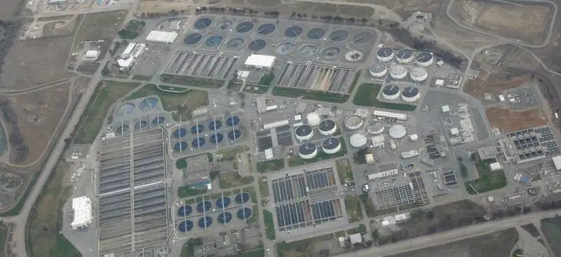
Chapter Outline: Chapter Objectives
After studying this chapter, you will be able to:
- Describe the composition of urine
- Label structures of the urinary system
- Characterize the roles of each of the parts of the urinary system
- Illustrate the macroscopic and microscopic structures of the kidney
- Trace the flow of blood through the kidney
- Outline how blood is filtered in the kidney nephron
- Provide symptoms of kidney failure
- List some of the solutes filtered, secreted, and reabsorbed in different parts of the nephron
- Describe the role of a portal system in the kidney
- Explain how urine osmolarity is hormonally regulated
- Describe the regulation of major ions by the kidney
- Summarize the role of the kidneys in maintaining acid–base balance
The urinary system has roles you may be well aware of: cleansing the blood and ridding the body of wastes probably come to mind. However, there are additional, equally important functions played by the system. Take for example, regulation of pH, a function shared with the lungs and the buffers in the blood. Additionally, the regulation of blood pressure is a role shared with the heart and blood vessels. What about regulating the concentration of solutes in the blood? Did you know that the kidney is important in determining the concentration of red blood cells? Eighty-five percent of the erythropoietin (EPO) produced to stimulate red blood cell production is produced in the kidneys. The kidneys also perform the final synthesis step of vitamin D production, converting calcidiol to calcitriol, the active form of vitamin D.
If the kidneys fail, these functions are compromised or lost altogether, with devastating effects on homeostasis. The affected individual might experience weakness, lethargy, shortness of breath, anemia, widespread edema (swelling), metabolic acidosis, rising potassium levels, heart arrhythmias, and more. Each of these functions is vital to your well-being and survival. The urinary system, controlled by the nervous system, also stores urine until a convenient time for disposal and then provides the anatomical structures to transport this waste liquid to the outside of the body. Failure of nervous control or the anatomical structures leading to a loss of control of urination results in a condition called incontinence.
This chapter will help you to understand the anatomy of the urinary system and how it enables the physiologic functions critical to homeostasis. It is best to think of the kidney as a regulator of plasma makeup rather than simply a urine producer. As you read each section, ask yourself this question: “What happens if this does not work?” This question will help you to understand how the urinary system maintains homeostasis and affects all the other systems of the body and the quality of one’s life.
Interactive
Watch this video from the Howard Hughes Medical Institute for an introduction to the urinary system.
25.1 Physical Characteristics of Urine¶
Learning Objectives
By the end of this section, you will be able to:
- Compare and contrast blood plasma, glomerular filtrate, and urine characteristics
- Describe the characteristics of a normal urine sample, including normal range of pH, osmolarity, and volume
The urinary system’s ability to filter the blood resides in about 2 to 3 million tufts of specialized capillaries—the glomeruli—distributed more or less equally between the two kidneys. Because the glomeruli filter the blood based mostly on particle size, large elements like blood cells, platelets, antibodies, and albumen are excluded. The glomerulus is the first part of the nephron, which then continues as a highly specialized tubular structure responsible for creating the final urine composition. All other solutes, such as ions, amino acids, vitamins, and wastes, are filtered to create a filtrate composition very similar to plasma. The glomeruli create about 200 liters (189 quarts) of this filtrate every day, yet you excrete less than two liters of waste you call urine.
Characteristics of the urine change, depending on influences such as water intake, exercise, environmental temperature, nutrient intake, and other factors (Table 25.1). Some of the characteristics such as color and odor are rough descriptors of your state of hydration. For example, if you exercise or work outside, and sweat a great deal, your urine will turn darker and produce a slight odor, even if you drink plenty of water. Athletes are often advised to consume water until their urine is clear. This is good advice; however, it takes time for the kidneys to process body fluids and store it in the bladder. Another way of looking at this is that the quality of the urine produced is an average over the time it takes to make that urine. Producing clear urine may take only a few minutes if you are drinking a lot of water or several hours if you are working outside and not drinking much.
Table 25.1
| Normal Urine Characteristics | |
|---|---|
| Characteristic | Normal values |
| Color | Pale yellow to deep amber |
| Odor | Odorless |
| Volume | 750–2000 mL/24 hour |
| pH | 4.5–8.0 |
| Specific gravity | 1.003–1.032 |
| Osmolarity | 40–1350 mOsmol/kg |
| Urobilinogen | 0.2–1.0 mg/100 mL |
| White blood cells | 0–2 HPF (per high-power field of microscope) |
| Leukocyte esterase | None |
| Protein | None or trace |
| Bilirubin | <0.3 mg/100 mL |
| Ketones | None |
| Nitrites | None |
| Blood | None |
| Glucose | None |
Urinalysis (urine analysis) often provides clues to renal disease. Normally, only traces of protein are found in urine, and when higher amounts are found, damage to the glomeruli is the likely basis. Unusually large quantities of urine may point to diseases like diabetes mellitus or hypothalamic tumors that cause diabetes insipidus. The color of urine is determined mostly by the breakdown products of red blood cell destruction (Figure 25.2). The “heme” of hemoglobin is converted by the liver into water-soluble forms that can be excreted into the bile and indirectly into the urine. This yellow pigment is urochrome. Urine color may also be affected by certain foods like beets, berries, and fava beans. A kidney stone or a cancer of the urinary system may produce sufficient bleeding to manifest as pink or even bright red urine. Diseases of the liver or obstructions of bile drainage from the liver impart a dark “tea” or “cola” hue to the urine. Dehydration produces darker, concentrated urine that may also possess the slight odor of ammonia. Most of the ammonia produced from protein breakdown is converted into urea by the liver, so ammonia is rarely detected in fresh urine. The strong ammonia odor you may detect in bathrooms or alleys is due to the breakdown of urea into ammonia by bacteria in the environment. About one in five people detect a distinctive odor in their urine after consuming asparagus; other foods such as onions, garlic, and fish can impart their own aromas! These food-caused odors are harmless.
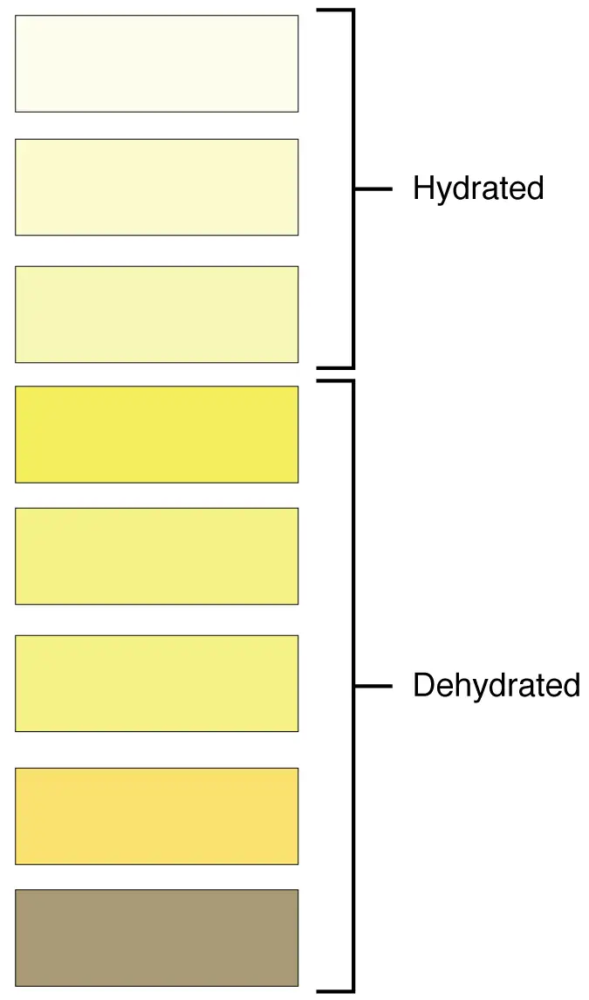
Urine volume varies considerably. The normal range is one to two liters per day (Table 25.2). The kidneys must produce a minimum urine volume of about 500 mL/day to rid the body of wastes. Output below this level may be caused by severe dehydration or renal disease and is termed oliguria. The virtual absence of urine production is termed anuria. Excessive urine production is polyuria, which may be due to diabetes mellitus or diabetes insipidus. In diabetes mellitus, blood glucose levels exceed the number of available sodium-glucose transporters in the kidney, and glucose appears in the urine. The osmotic nature of glucose attracts water, leading to its loss in the urine. In the case of diabetes insipidus, insufficient pituitary antidiuretic hormone (ADH) release or insufficient numbers of ADH receptors in the collecting ducts means that too few water channels are inserted into the cell membranes that line the collecting ducts of the kidney. Insufficient numbers of water channels (aquaporins) reduce water absorption, resulting in high volumes of very dilute urine.
Table 25.2
| Urine Volumes | ||
|---|---|---|
| Volume condition | Volume | Causes |
| Normal | 1–2 L/day | |
| Polyuria | >2.5 L/day | Diabetes mellitus; diabetes insipidus; excess caffeine or alcohol; kidney disease; certain drugs, such as diuretics; sickle cell anemia; excessive water intake |
| Oliguria | 300–500 mL/day | Dehydration; blood loss; diarrhea; cardiogenic shock; kidney disease; enlarged prostate |
| Anuria | <50 mL/day | Kidney failure; obstruction, such as kidney stone or tumor; enlarged prostate |
The pH (hydrogen ion concentration) of the urine can vary more than 1000-fold, from a normal low of 4.5 to a maximum of 8.0. Diet can influence pH; meats lower the pH, whereas citrus fruits, vegetables, and dairy products raise the pH. Chronically high or low pH can lead to disorders, such as the development of kidney stones or osteomalacia.
Specific gravity is a measure of the quantity of solutes per unit volume of a solution and is traditionally easier to measure than osmolarity. Urine will always have a specific gravity greater than pure water (water = 1.0) due to the presence of solutes. Laboratories can now measure urine osmolarity directly, which is a more accurate indicator of urinary solutes than specific gravity. Remember that osmolarity is the number of osmoles or milliosmoles per liter of fluid (mOsmol/L). Urine osmolarity ranges from a low of 50–100 mOsmol/L to as high as 1200 mOsmol/L H2O.
Cells are not normally found in the urine. The presence of leukocytes may indicate a urinary tract infection. Leukocyte esterase is released by leukocytes; if detected in the urine, it can be taken as indirect evidence of a urinary tract infection (UTI).
Protein does not normally leave the glomerular capillaries, so only trace amounts of protein should be found in the urine, approximately 10 mg/100 mL in a random sample. If excessive protein is detected in the urine, it usually means that the glomerulus is damaged and is allowing protein to “leak” into the filtrate.
Ketones are byproducts of fat metabolism. Finding ketones in the urine suggests that the body is using fat as an energy source in preference to glucose. In diabetes mellitus when there is not enough insulin (type I diabetes mellitus) or because of insulin resistance (type II diabetes mellitus), there is plenty of glucose, but without the action of insulin, the cells cannot take it up, so it remains in the bloodstream. Instead, the cells are forced to use fat as their energy source, and fat consumed at such a level produces excessive ketones as byproducts. These excess ketones will appear in the urine. Ketones may also appear if there is a severe deficiency of proteins or carbohydrates in the diet.
Nitrates (NO3–) occur normally in the urine. Gram-negative bacteria metabolize nitrate into nitrite (NO2–), and its presence in the urine is indirect evidence of infection.
There should be no blood found in the urine. It may sometimes appear in urine samples as a result of menstrual contamination, but this is not an abnormal condition. Now that you understand what the normal characteristics of urine are, the next section will introduce you to how you store and dispose of this waste product and how you make it.
25.2 Gross Anatomy of Urine Transport¶
Learning Objectives
By the end of this section, you will be able to:
- Identify the ureters, urinary bladder, and urethra, as well as their location, structure, histology, and function
- Compare and contrast male and female urethras
- Describe the micturition reflex
- Describe voluntary and involuntary neural control of micturition
Rather than start with urine formation, this section will start with urine excretion. Urine is a fluid of variable composition that requires specialized structures to remove it from the body safely and efficiently. Blood is filtered, and the filtrate is transformed into urine at a relatively constant rate throughout the day. This processed liquid is stored until a convenient time for excretion. All structures involved in the transport and storage of the urine are large enough to be visible to the naked eye. This transport and storage system not only stores the waste, but it protects the tissues from damage due to the wide range of pH and osmolarity of the urine, prevents infection by foreign organisms, and for the male, provides reproductive functions.
Urethra¶
The urethra transports urine from the bladder to the outside of the body for disposal. The urethra is the only urologic organ that shows any significant anatomic difference between males and females; all other urine transport structures are identical (Figure 25.3).
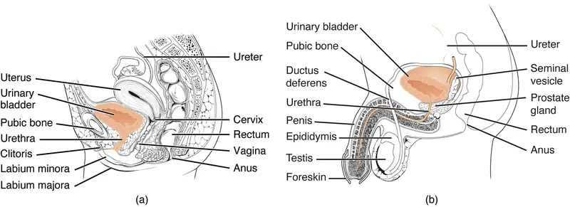
The urethra in both males and females begins inferior and central to the two ureteral openings forming the three points of a triangular-shaped area at the base of the bladder called the trigone (Greek tri- = “triangle” and the root of the word “trigonometry”). The urethra tracks posterior and inferior to the pubic symphysis (see Figure 25.3a). In both males and females, the proximal urethra is lined by transitional epithelium, whereas the terminal portion is a nonkeratinized, stratified squamous epithelium. In the male, pseudostratified columnar epithelium lines the urethra between these two cell types. Voiding is regulated by an involuntary autonomic nervous system-controlled internal urinary sphincter, consisting of smooth muscle and voluntary skeletal muscle that forms the external urinary sphincter below it.
Female Urethra¶
The external urethral orifice is embedded in the anterior vaginal wall inferior to the clitoris, superior to the vaginal opening (introitus), and medial to the labia minora. Its short length, about 4 cm, is less of a barrier to fecal bacteria than the longer male urethra and the best explanation for the greater incidence of UTI in females. Voluntary control of the external urethral sphincter is a function of the pudendal nerve. It arises in the sacral region of the spinal cord, traveling via the S2–S4 nerves of the sacral plexus.
Male Urethra¶
The male urethra passes through the prostate gland immediately inferior to the bladder before passing below the pubic symphysis (see Figure 25.3b). The length of the male urethra varies between people but averages 20 cm in length. It is divided into four regions: the preprostatic urethra, the prostatic urethra, the membranous urethra, and the spongy or penile urethra. The preprostatic urethra is very short and incorporated into the bladder wall. The prostatic urethra passes through the prostate gland. During sexual intercourse, it receives sperm via the ejaculatory ducts and secretions from the seminal vesicles. Paired Cowper’s glands (bulbourethral glands) produce and secrete mucus into the urethra to buffer urethral pH during sexual stimulation. The mucus neutralizes the usually acidic environment and lubricates the urethra, decreasing the resistance to ejaculation. The membranous urethra passes through the deep muscles of the perineum, where it is invested by the overlying urethral sphincters. The spongy urethra exits at the tip (external urethral orifice) of the penis after passing through the corpus spongiosum. Mucous glands are found along much of the length of the urethra and protect the urethra from extremes of urine pH. Innervation is the same in both males and females.
Bladder¶
The urinary bladder collects urine from both ureters (Figure 25.4). The bladder lies anterior to the uterus in females, posterior to the pubic bone and anterior to the rectum. During late pregnancy, its capacity is reduced due to compression by the enlarging uterus, resulting in increased frequency of urination. In males, the anatomy is similar, minus the uterus, and with the addition of the prostate inferior to the bladder. The bladder is a retroperitoneal organ whose "dome" distends superiorly when the bladder is filling with urine.
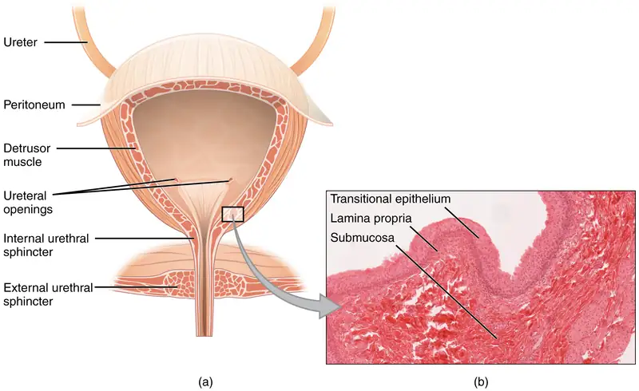
Interactive
View the University of Michigan WebScope to explore the tissue sample in greater detail.
The bladder is a highly distensible organ comprised of irregular crisscrossing bands of smooth muscle collectively called the detrusor muscle. The interior surface is made of transitional cellular epithelium that is structurally suited for the large volume fluctuations of the bladder. When empty, it resembles columnar epithelia, but when stretched, it “transitions” (hence the name) to a squamous appearance (see Figure 25.4). Volumes in adults can range from nearly zero to 500–600 mL.
The detrusor muscle contracts with significant force in the young. The bladder’s strength diminishes with age, but voluntary contractions of abdominal skeletal muscles can increase intra-abdominal pressure to promote more forceful bladder emptying. Such voluntary contraction is also used in forceful defecation and childbirth.
Micturition Reflex¶
Micturition is a less-often used, but proper term for urination or voiding. It results from an interplay of involuntary and voluntary actions by the internal and external urethral sphincters. When bladder volume reaches about 150 mL, an urge to void is sensed but is easily overridden. Voluntary control of urination relies on consciously preventing relaxation of the external urethral sphincter to maintain urinary continence. As the bladder fills, subsequent urges become harder to ignore. Ultimately, voluntary constraint fails with resulting incontinence, which will occur as bladder volume approaches 300 to 400 mL.
Normal micturition is a result of stretch receptors in the bladder wall that transmit nerve impulses to the sacral region of the spinal cord to generate a spinal reflex. The resulting parasympathetic neural outflow causes contraction of the detrusor muscle and relaxation of the involuntary internal urethral sphincter. At the same time, the spinal cord inhibits somatic motor neurons, resulting in the relaxation of the skeletal muscle of the external urethral sphincter. The micturition reflex is active in infants but with maturity, children learn to override the reflex by asserting external sphincter control, thereby delaying voiding (potty training). This reflex may be preserved even in the face of spinal cord injury that results in paraplegia or quadriplegia. However, relaxation of the external sphincter may not be possible in all cases, and therefore, periodic catheterization may be necessary for bladder emptying.
Nerves involved in the control of urination include the hypogastric, pelvic, and pudendal (Figure 25.5). Voluntary micturition requires an intact spinal cord and functional pudendal nerve arising from the sacral micturition center. Since the external urinary sphincter is voluntary skeletal muscle, actions by cholinergic neurons maintain contraction (and thereby continence) during filling of the bladder. At the same time, sympathetic nervous activity via the hypogastric nerves suppresses contraction of the detrusor muscle. With further bladder stretch, afferent signals traveling over sacral pelvic nerves activate parasympathetic neurons. This activates efferent neurons to release acetylcholine at the neuromuscular junctions, producing detrusor contraction and bladder emptying.
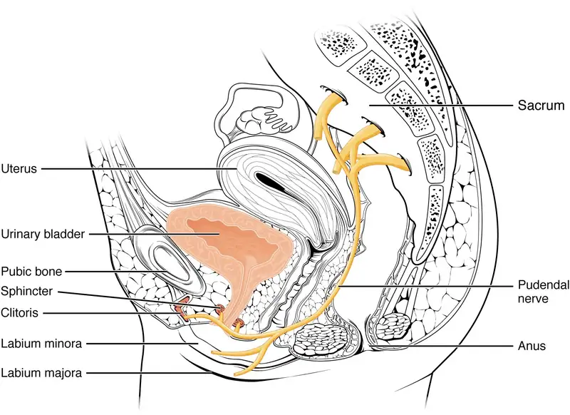
Ureters¶
The kidneys and ureters are completely retroperitoneal, and the bladder has a peritoneal covering only over the dome. As urine is formed, it drains into the calyces of the kidney, which merge to form the funnel-shaped renal pelvis in the hilum of each kidney. The renal pelvis narrows to become the ureter of each kidney. As urine passes through the ureter, it does not passively drain into the bladder but rather is propelled by waves of peristalsis. As the ureters enter the pelvis, they sweep laterally, hugging the pelvic walls. As they approach the bladder, they turn medially and pierce the bladder wall obliquely. This is important because it creates a one-way valve (a physiological sphincter rather than an anatomical sphincter) that allows urine into the bladder but prevents reflux of urine from the bladder back into the ureter. Children born lacking this oblique course of the ureter through the bladder wall are susceptible to “vesicoureteral reflux,” which dramatically increases their risk of serious UTI. Pregnancy also increases the likelihood of reflux and UTI.
The ureters are approximately 30 cm long. The inner mucosa is lined with transitional epithelium (Figure 25.6) and scattered goblet cells that secrete protective mucus. The muscular layer of the ureter consists of longitudinal and circular smooth muscles that create the peristaltic contractions to move the urine into the bladder without the aid of gravity. Finally, a loose adventitial layer composed of collagen and fat anchors the ureters between the parietal peritoneum and the posterior abdominal wall.
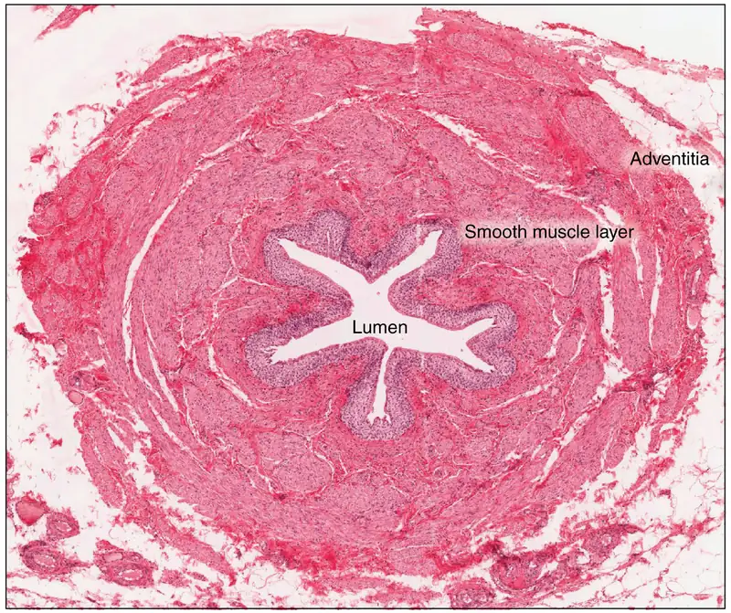
25.3 Gross Anatomy of the Kidney¶
Learning Objectives
By the end of this section, you will be able to:
- Describe the external structure of the kidney, including its location, support structures, and covering
- Identify the major internal divisions and structures of the kidney
- Identify the major blood vessels associated with the kidney and trace the path of blood through the kidney
- Compare and contrast the cortical and juxtamedullary nephrons
- Name structures found in the cortex and medulla
- Describe the physiological characteristics of the cortex and medulla
The kidneys lie on either side of the spine in the retroperitoneal space between the parietal peritoneum and the posterior abdominal wall, well protected by muscle, fat, and ribs. They are roughly the size of your fist, and the male kidney is typically a bit larger than the female kidney. The kidneys are well vascularized, receiving about 25 percent of the cardiac output at rest.
Interactive
There have never been sufficient kidney donations to provide a kidney to each person needing one. Watch this video to learn about the TED (Technology, Entertainment, Design) Conference held in March 2011. In this video, Dr. Anthony Atala discusses a cutting-edge technique in which a new kidney is “printed.” The successful utilization of this technology is still several years in the future, but imagine a time when you can print a replacement organ or tissue on demand.
External Anatomy¶
The left kidney is located at about the T12 to L3 vertebrae, whereas the right is lower due to slight displacement by the liver. Upper portions of the kidneys are somewhat protected by the eleventh and twelfth ribs (Figure 25.7). Each kidney weighs about 125–175 g in males and 115–155 g in females. They are about 11–14 cm in length, 6 cm wide, and 4 cm thick, and are directly covered by a fibrous capsule composed of dense, irregular connective tissue that helps to hold their shape and protect them. This capsule is covered by a shock-absorbing layer of adipose tissue called the renal fat pad, which in turn is encompassed by a tough renal fascia. The fascia and, to a lesser extent, the overlying peritoneum serve to firmly anchor the kidneys to the posterior abdominal wall in a retroperitoneal position.
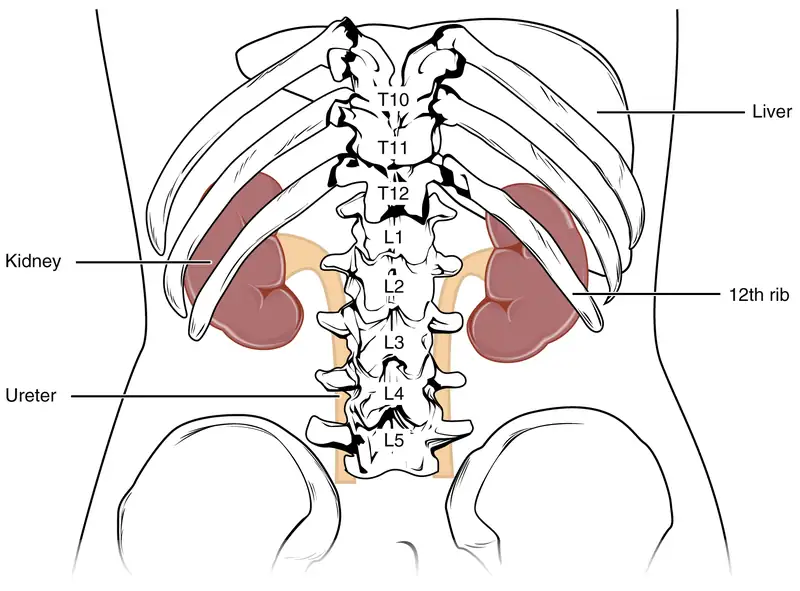
On the superior aspect of each kidney is the adrenal gland. The adrenal cortex directly influences renal function through the production of the hormone aldosterone to stimulate sodium reabsorption.
Internal Anatomy¶
A frontal section through the kidney reveals an outer region called the renal cortex and an inner region called the medulla (Figure 25.8). The renal columns are connective tissue extensions that radiate downward from the cortex through the medulla to separate the most characteristic features of the medulla, the renal pyramids and renal papillae. The papillae are bundles of collecting ducts that transport urine made by nephrons to the calyces of the kidney for excretion. The renal columns also serve to divide the kidney into 6–8 lobes and provide a supportive framework for vessels that enter and exit the cortex. The pyramids and renal columns taken together constitute the kidney lobes.
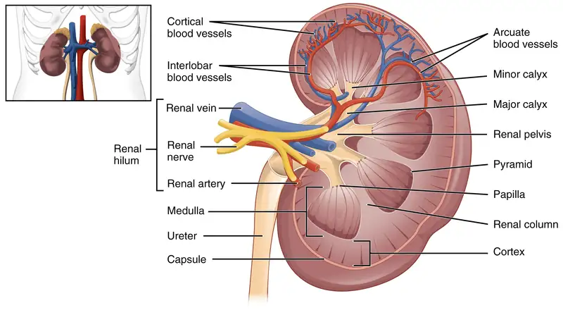
Renal Hilum¶
The renal hilum is the entry and exit site for structures servicing the kidneys: vessels, nerves, lymphatics, and ureters. The medial-facing hila are tucked into the sweeping convex outline of the cortex. Emerging from the hilum is the renal pelvis, which is formed from the major and minor calyxes in the kidney. The smooth muscle in the renal pelvis funnels urine via peristalsis into the ureter. The renal arteries form directly from the descending aorta, whereas the renal veins return cleansed blood directly to the inferior vena cava. The artery, vein, and renal pelvis are arranged in an anterior-to-posterior order.
Nephrons and Vessels¶
The renal artery first divides into segmental arteries, followed by further branching to form interlobar arteries that pass through the renal columns to reach the cortex (Figure 25.9). The interlobar arteries, in turn, branch into arcuate arteries, cortical radiate arteries, and then into afferent arterioles. The afferent arterioles service about 1.3 million nephrons in each kidney.
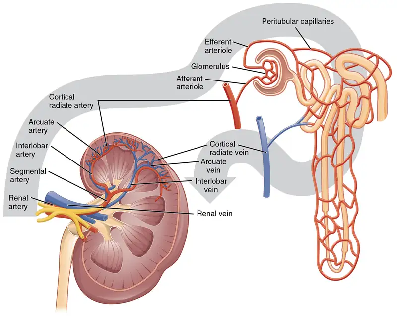
Nephrons are the “functional units” of the kidney; they cleanse the blood and balance the constituents of the circulation. The afferent arterioles form a tuft of high-pressure capillaries about 200 µm in diameter, the glomerulus. The rest of the nephron consists of a continuous sophisticated tubule whose proximal end surrounds the glomerulus in an intimate embrace—this is Bowman’s capsule. The glomerulus and Bowman’s capsule together form the renal corpuscle. As mentioned earlier, these glomerular capillaries filter the blood based on particle size. After passing through the renal corpuscle, the capillaries form a second arteriole, the efferent arteriole (Figure 25.10). These will next form a capillary network around the more distal portions of the nephron tubule, the peritubular capillaries and vasa recta, before returning to the venous system. As the glomerular filtrate progresses through the nephron, these capillary networks recover most of the solutes and water, and return them to the circulation. Since a capillary bed (the glomerulus) drains into a vessel that in turn forms a second capillary bed, the definition of a portal system is met. This is the only portal system in which an arteriole is found between the first and second capillary beds. (Portal systems also link the hypothalamus to the anterior pituitary, and the blood vessels of the digestive viscera to the liver.)
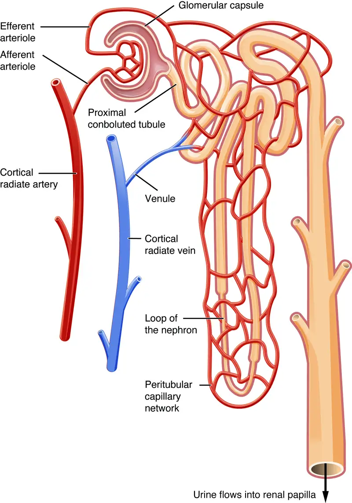
Interactive
Visit this link to view an interactive tutorial of the flow of blood through the kidney.
Cortex¶
In a dissected kidney, it is easy to identify the cortex; it appears lighter in color compared to the rest of the kidney. All of the renal corpuscles as well as both the proximal convoluted tubules (PCTs) and distal convoluted tubules are found here. Some nephrons have a short loop of Henle that does not dip beyond the cortex. These nephrons are called cortical nephrons. About 15 percent of nephrons have long loops of Henle that extend deep into the medulla and are called juxtamedullary nephrons.
25.4 Microscopic Anatomy of the Kidney¶
Learning Objectives
By the end of this section, you will be able to:
- Distinguish the histological differences between the renal cortex and medulla
- Describe the structure of the filtration membrane
- Identify the major structures and subdivisions of the renal corpuscles, renal tubules, and renal capillaries
- Discuss the function of the peritubular capillaries and vasa recta
- Identify the location of the juxtaglomerular apparatus and describe the cells that line it
- Describe the histology of the proximal convoluted tubule, loop of Henle, distal convoluted tubule, and collecting ducts
The renal structures that conduct the essential work of the kidney cannot be seen by the naked eye. Only a light or electron microscope can reveal these structures. Even then, serial sections and computer reconstruction are necessary to give us a comprehensive view of the functional anatomy of the nephron and its associated blood vessels.
Nephrons: The Functional Unit¶
Nephrons take a simple filtrate of the blood and modify it into urine. Many changes take place in the different parts of the nephron before urine is created for disposal. The term forming urine will be used hereafter to describe the filtrate as it is modified into true urine. The principle task of the nephron population is to balance the plasma to homeostatic set points and excrete potential toxins in the urine. They do this by accomplishing three principle functions—filtration, reabsorption, and secretion. They also have additional secondary functions that exert control in three areas: blood pressure (via production of renin), red blood cell production (via the hormone EPO), and calcium absorption (via conversion of calcidiol into calcitriol, the active form of vitamin D).
Renal Corpuscle¶
As discussed earlier, the renal corpuscle consists of a tuft of capillaries called the glomerulus that is largely surrounded by Bowman’s (glomerular) capsule. The glomerulus is a high-pressure capillary bed between afferent and efferent arterioles. Bowman’s capsule surrounds the glomerulus to form a lumen, and captures and directs this filtrate to the PCT. The outermost part of Bowman’s capsule, the parietal layer, is a simple squamous epithelium. It transitions onto the glomerular capillaries in an intimate embrace to form the visceral layer of the capsule. Here, the cells are not squamous, but uniquely shaped cells (podocytes) extending finger-like arms (pedicels) to cover the glomerular capillaries (Figure 25.11). These projections interdigitate to form filtration slits, leaving small gaps between the digits to form a sieve. As blood passes through the glomerulus, 10 to 20 percent of the plasma filters between these sieve-like fingers to be captured by Bowman’s capsule and funneled to the PCT. Where the fenestrae (windows) in the glomerular capillaries match the spaces between the podocyte “fingers,” the only thing separating the capillary lumen and the lumen of Bowman’s capsule is their shared basement membrane (Figure 25.12). These three features comprise what is known as the filtration membrane. This membrane permits very rapid movement of filtrate from capillary to capsule though pores that are only 70 nm in diameter.
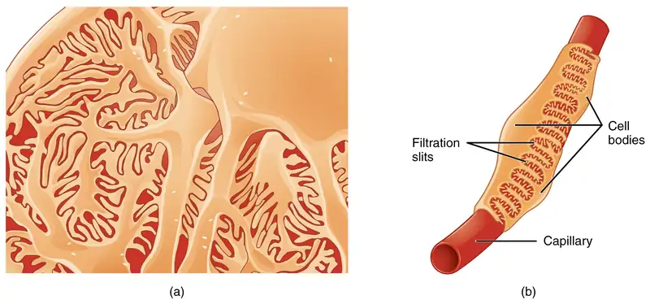
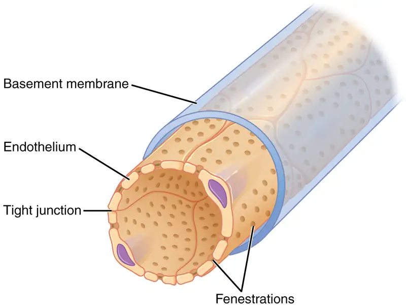
The fenestrations prevent filtration of blood cells or large proteins, but allow most other constituents through. These substances cross readily if they are less than 4 nm in size and most pass freely up to 8 nm in size. An additional factor affecting the ability of substances to cross this barrier is their electric charge. The proteins associated with these pores are negatively charged, so they tend to repel negatively charged substances and allow positively charged substances to pass more readily. The basement membrane prevents filtration of medium-to-large proteins such as globulins. There are also mesangial cells in the filtration membrane that can contract to help regulate the rate of filtration of the glomerulus. Overall, filtration is regulated by fenestrations in capillary endothelial cells, podocytes with filtration slits, membrane charge, and the basement membrane between capillary cells. The result is the creation of a filtrate that does not contain cells or large proteins, and has a slight predominance of positively charged substances.
Lying just outside Bowman’s capsule and the glomerulus is the juxtaglomerular apparatus (JGA) (Figure 25.13). At the juncture where the afferent and efferent arterioles enter and leave Bowman’s capsule, the initial part of the distal convoluted tubule (DCT) comes into direct contact with the arterioles. The wall of the DCT at that point forms a part of the JGA known as the macula densa. This cluster of cuboidal epithelial cells monitors the fluid composition of fluid flowing through the DCT. In response to the concentration of Na+ in the fluid flowing past them, these cells release paracrine signals. They also have a single, nonmotile cilium that responds to the rate of fluid movement in the tubule. The paracrine signals released in response to changes in flow rate and Na+ concentration are adenosine triphosphate (ATP) and adenosine.
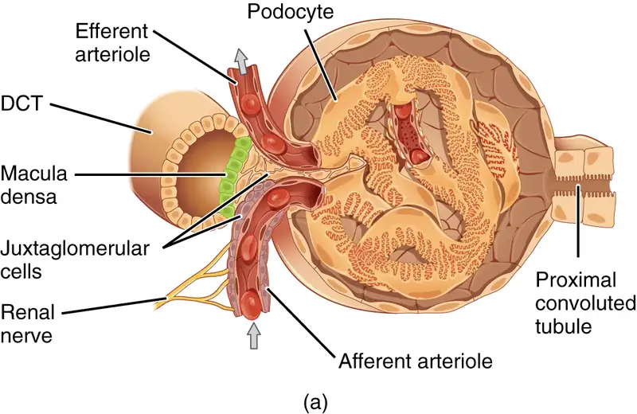
A second cell type in this apparatus is the juxtaglomerular cell. This is a modified, smooth muscle cell lining the afferent arteriole that can contract or relax in response to ATP or adenosine released by the macula densa. Such contraction and relaxation regulate blood flow to the glomerulus. If the osmolarity of the filtrate is too high (hyperosmotic), the juxtaglomerular cells will contract, decreasing the glomerular filtration rate (GFR) so less plasma is filtered, leading to less urine formation and greater retention of fluid. This will ultimately decrease blood osmolarity toward the physiologic norm. If the osmolarity of the filtrate is too low, the juxtaglomerular cells will relax, increasing the GFR and enhancing the loss of water to the urine, causing blood osmolarity to rise. In other words, when blood osmolarity goes up, filtration and urine formation decrease and water is retained. When blood osmolarity goes down, filtration and urine formation increase and water is lost by way of the urine. The net result of these opposing actions is to keep the rate of filtration relatively constant. A second function of the macula densa cells is to regulate renin release from the juxtaglomerular cells of the afferent arteriole (Figure 25.14). Active renin is a protein comprised of 304 amino acids that cleaves several amino acids from angiotensinogen to produce angiotensin I. Angiotensin I is not biologically active until converted to angiotensin II by angiotensin-converting enzyme (ACE) from the lungs. Angiotensin II is a systemic vasoconstrictor that helps to regulate blood pressure by increasing it. Angiotensin II also stimulates the release of the steroid hormone aldosterone from the adrenal cortex. Aldosterone stimulates Na+ reabsorption by the kidney, which also results in water retention and increased blood pressure.
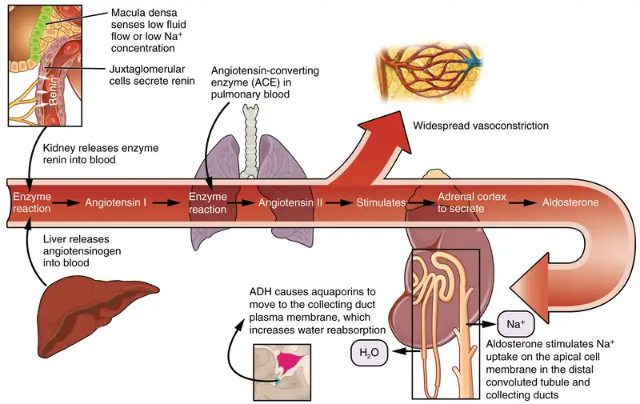
Proximal Convoluted Tubule (PCT)¶
Filtered fluid collected by Bowman’s capsule enters into the PCT. It is called convoluted due to its tortuous path. Simple cuboidal cells form this tubule with prominent microvilli on the luminal surface, forming a brush border. These microvilli create a large surface area to maximize the absorption and secretion of solutes (Na+, Cl–, glucose, etc.), the most essential function of this portion of the nephron. These cells actively transport ions across their membranes, so they possess a high concentration of mitochondria in order to produce sufficient ATP.
Loop of Henle¶
The descending and ascending portions of the loop of Henle (sometimes referred to as the nephron loop) are, of course, just continuations of the same tubule. They run adjacent and parallel to each other after having made a hairpin turn at the deepest point of their descent. The descending loop of Henle consists of an initial short, thick portion and long, thin portion, whereas the ascending loop consists of an initial short, thin portion followed by a long, thick portion. The descending thick portion consists of simple cuboidal epithelium similar to that of the PCT. The descending and ascending thin portions consists of simple squamous epithelium. As you will see later, these are important differences, since different portions of the loop have different permeabilities for solutes and water. The ascending thick portion consists of simple cuboidal epithelium similar to the DCT.
Distal Convoluted Tubule (DCT)¶
The DCT, like the PCT, is very tortuous and formed by simple cuboidal epithelium, but it is shorter than the PCT. These cells are not as active as those in the PCT; thus, there are fewer microvilli on the apical surface. However, these cells must also pump ions against their concentration gradient, so you will find of large numbers of mitochondria, although fewer than in the PCT.
Collecting Ducts¶
The collecting ducts are continuous with the nephron but not technically part of it. In fact, each duct collects filtrate from several nephrons for final modification. Collecting ducts merge as they descend deeper in the medulla to form about 30 terminal ducts, which empty at a papilla. They are lined with simple cuboidal or columnar epithelium with receptors for ADH. When stimulated by ADH, these cells will insert aquaporin channel proteins into their membranes, which as their name suggests, allow water to pass from the duct lumen through the cells and into the interstitial spaces to be recovered by the vasa recta. This process allows for the recovery of large amounts of water from the filtrate back into the blood. In the absence of ADH, these channels are not inserted, resulting in the excretion of water in the form of dilute urine. Most, if not all, cells of the body contain aquaporin molecules, whose channels are so small that only water can pass. At least 10 types of aquaporins are known in humans, and six of those are found in the kidney. The function of all aquaporins is to allow the movement of water across the lipid-rich, hydrophobic cell membrane (Figure 25.15).
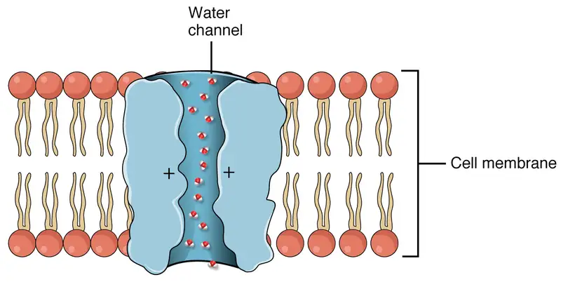
25.5 Physiology of Urine Formation¶
Learning Objectives
By the end of this section, you will be able to:
- Describe the hydrostatic and colloid osmotic forces that favor and oppose filtration
- Describe glomerular filtration rate (GFR), state the average value of GFR, and explain how clearance rate can be used to measure GFR
- Predict specific factors that will increase or decrease GFR
- State the percent of the filtrate that is normally reabsorbed and explain why the process of reabsorption is so important
- Calculate daily urine production
- List common symptoms of kidney failure
Having reviewed the anatomy and microanatomy of the urinary system, now is the time to focus on the physiology. You will discover that different parts of the nephron utilize specific processes to produce urine: filtration, reabsorption, and secretion. You will learn how each of these processes works and where they occur along the nephron and collecting ducts. The physiologic goal is to modify the composition of the plasma and, in doing so, produce the waste product urine.
Failure of the renal anatomy and/or physiology can lead suddenly or gradually to renal failure. In this event, a number of symptoms, signs, or laboratory findings point to the diagnosis (Table 25.3).
Table 25.3
| Symptoms of Kidney Failure |
|---|
| Weakness |
| Lethargy |
| Shortness of breath |
| Widespread edema |
| Anemia |
| Metabolic acidosis |
| Metabolic alkalosis |
| Heart arrhythmias |
| Uremia (high urea level in the blood) |
| Loss of appetite |
| Fatigue |
| Excessive urination |
| Oliguria (too little urine output) |
Glomerular Filtration Rate (GFR)¶
The volume of filtrate formed by both kidneys per minute is termed the glomerular filtration rate (GFR). The heart pumps about 5 L blood per min under resting conditions. Approximately 20 percent or one liter enters the kidneys to be filtered. On average, this liter results in the production of about 125 mL/min filtrate produced in males (range of 90 to 140 mL/min) and 105 mL/min filtrate produced in females (range of 80 to 125 mL/min). This amount equates to a volume of about 180 L/day in males and 150 L/day in females. Ninety-nine percent of this filtrate is returned to the circulation by reabsorption so that only about 1–2 liters of urine are produced per day (Table 25.4).
Table 25.4
| Calculating Urine Formation per Day | ||
|---|---|---|
| Flow per minute (mL) | Calculation | |
| Renal blood flow | 1050 | Cardiac output is about 5000 mL/minute, of which 21 percent flows through the kidney. 5000*0.21 = 1050 mL blood/min |
| Renal plasma flow | 578 | Renal plasma flow equals the blood flow per minute times (1 minus the hematocrit). If a person has a hematocrit of 45, then the renal plasma flow is 55 percent. 1050*0.55 = 578 mL plasma/min |
| Glomerular filtration rate | 110 | The GFR is the amount of plasma entering Bowman’s capsule per minute. It is the renal plasma flow times the fraction that enters the renal capsule (19 percent). 578*0.19 = 110 mL filtrate/min |
| Urine | 1296 ml/day | The filtrate not recovered by the kidney is the urine that will be eliminated. It is the GFR times the fraction of the filtrate that is not reabsorbed (0.8 percent). 110*.008 = 0.9 mL urine /min Multiply urine/min times 60 minutes times 24 hours to get daily urine production. 0.9*60*24 = 1296 mL/day urine |
GFR is influenced by the hydrostatic pressure and colloid osmotic pressure on either side of the capillary membrane of the glomerulus. Recall that filtration occurs as pressure forces fluid and solutes through a semipermeable barrier with the solute movement constrained by particle size. Hydrostatic pressure is the pressure produced by a fluid against a surface. If you have a fluid on both sides of a barrier, both fluids exert a pressure in opposing directions. Net fluid movement will be in the direction of the lower pressure. Osmosis is the movement of solvent (water) across a membrane that is impermeable to a solute in the solution. This creates a pressure, osmotic pressure, which will exist until the solute concentration is the same on both sides of a semipermeable membrane. As long as the concentration differs, water will move. Glomerular filtration occurs when glomerular hydrostatic pressure exceeds the luminal hydrostatic pressure of Bowman’s capsule. There is also an opposing force, the osmotic pressure, which is typically higher in the glomerular capillary.
To understand why this is so, look more closely at the microenvironment on either side of the filtration membrane. You will find osmotic pressure exerted by the solutes inside the lumen of the capillary as well as inside of Bowman’s capsule. Since the filtration membrane limits the size of particles crossing the membrane, the osmotic pressure inside the glomerular capillary is higher than the osmotic pressure in Bowman’s capsule. Recall that cells and the medium-to-large proteins cannot pass between the podocyte processes or through the fenestrations of the capillary endothelial cells. This means that red and white blood cells, platelets, albumins, and other proteins too large to pass through the filter remain in the capillary, creating an average colloid osmotic pressure of 30 mm Hg within the capillary. The absence of proteins in Bowman’s space (the lumen within Bowman’s capsule) results in an osmotic pressure near zero. Thus, the only pressure moving fluid across the capillary wall into the lumen of Bowman’s space is hydrostatic pressure. Hydrostatic (fluid) pressure is sufficient to push water through the membrane despite the osmotic pressure working against it. The sum of all of the influences, both osmotic and hydrostatic, results in a net filtration pressure (NFP) of about 10 mm Hg (Figure 25.16).
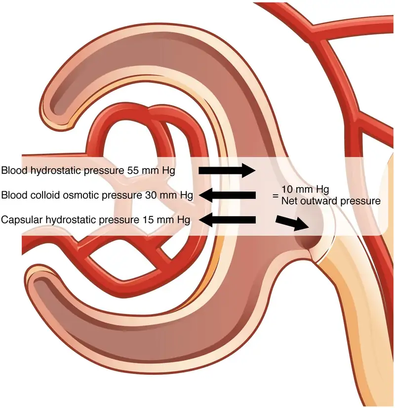
A proper concentration of solutes in the blood is important in maintaining osmotic pressure both in the glomerulus and systemically. There are disorders in which too much protein passes through the filtration slits into the kidney filtrate. This excess protein in the filtrate leads to a deficiency of circulating plasma proteins. In turn, the presence of protein in the urine increases its osmolarity; this holds more water in the filtrate and results in an increase in urine volume. Because there is less circulating protein, principally albumin, the osmotic pressure of the blood falls. Less osmotic pressure pulling water into the capillaries tips the balance towards hydrostatic pressure, which tends to push it out of the capillaries. The net effect is that water is lost from the circulation to interstitial tissues and cells. This “plumps up” the tissues and cells, a condition termed systemic edema.
Net Filtration Pressure (NFP)¶
NFP determines filtration rates through the kidney. It is determined as follows:
NFP = Glomerular blood hydrostatic pressure (GBHP) – [capsular hydrostatic pressure (CHP) + blood colloid osmotic pressure (BCOP)] = 10 mm Hg
That is:
NFP = GBHP – [CHP + BCOP] = 10 mm Hg
Or:
NFP = 55 – [15 + 30] = 10 mm Hg
As you can see, there is a low net pressure across the filtration membrane. Intuitively, you should realize that minor changes in osmolarity of the blood or changes in capillary blood pressure result in major changes in the amount of filtrate formed at any given point in time. The kidney is able to cope with a wide range of blood pressures. In large part, this is due to the autoregulatory nature of smooth muscle. When you stretch it, it contracts. Thus, when blood pressure goes up, smooth muscle in the afferent capillaries contracts to limit any increase in blood flow and filtration rate. When blood pressure drops, the same capillaries relax to maintain blood flow and filtration rate. The net result is a relatively steady flow of blood into the glomerulus and a relatively steady filtration rate in spite of significant systemic blood pressure changes. Mean arterial blood pressure is calculated by adding 1/3 of the difference between the systolic and diastolic pressures to the diastolic pressure. Therefore, if the blood pressure is 110/80, the difference between systolic and diastolic pressure is 30. One third of this is 10, and when you add this to the diastolic pressure of 80, you arrive at a calculated mean arterial pressure of 90 mm Hg. Therefore, if you use mean arterial pressure for the GBHP in the formula for calculating NFP, you can determine that as long as mean arterial pressure is above approximately 60 mm Hg, the pressure will be adequate to maintain glomerular filtration. Blood pressures below this level will impair renal function and cause systemic disorders that are severe enough to threaten survival. This condition is called shock.
Determination of the GFR is one of the tools used to assess the kidney’s excretory function. This is more than just an academic exercise. Since many drugs are excreted in the urine, a decline in renal function can lead to toxic accumulations. Additionally, administration of appropriate drug dosages for those drugs primarily excreted by the kidney requires an accurate assessment of GFR. GFR can be estimated closely by intravenous administration of inulin. Inulin is a plant polysaccharide that is neither reabsorbed nor secreted by the kidney. Its appearance in the urine is directly proportional to the rate at which it is filtered by the renal corpuscle. However, since measuring inulin clearance is cumbersome in the clinical setting, most often, the GFR is estimated by measuring naturally occurring creatinine, a protein-derived molecule produced by muscle metabolism that is not reabsorbed and only slightly secreted by the nephron.
25.6 Tubular Reabsorption¶
Learning Objectives
By the end of this section, you will be able to:
- List specific transport mechanisms occurring in different parts of the nephron, including active transport, osmosis, facilitated diffusion, and passive electrochemical gradients
- List the different membrane proteins of the nephron, including channels, transporters, and ATPase pumps
- Compare and contrast passive and active tubular reabsorption
- Explain why the differential permeability or impermeability of specific sections of the nephron tubules is necessary for urine formation
- Describe how and where water, organic compounds, and ions are reabsorbed in the nephron
- Explain the role of the loop of Henle, the vasa recta, and the countercurrent multiplication mechanisms in the concentration of urine
- List the locations in the nephron where tubular secretion occurs
With up to 180 liters per day passing through the nephrons of the kidney, it is quite obvious that most of that fluid and its contents must be reabsorbed. That recovery occurs in the PCT, loop of Henle, DCT, and the collecting ducts (Table 25.5 and Figure 25.17). Various portions of the nephron differ in their capacity to reabsorb water and specific solutes. While much of the reabsorption and secretion occur passively based on concentration gradients, the amount of water that is reabsorbed or lost is tightly regulated. This control is exerted directly by ADH and aldosterone, and indirectly by renin. Most water is recovered in the PCT, loop of Henle, and DCT. About 10 percent (about 18 L) reaches the collecting ducts. The collecting ducts, under the influence of ADH, can recover almost all of the water passing through them, in cases of dehydration, or almost none of the water, in cases of over-hydration.
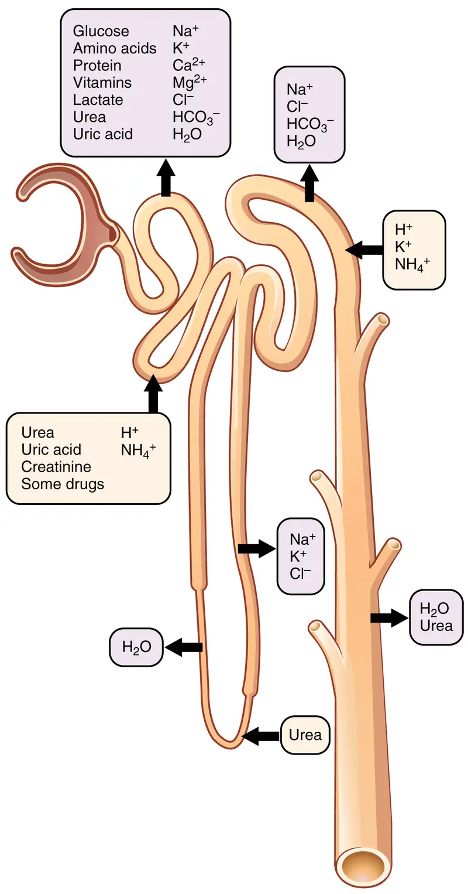
Table 25.5
| Substances Secreted or Reabsorbed in the Nephron and Their Locations | ||||
|---|---|---|---|---|
| Substance | PCT | Loop of Henle | DCT | Collecting ducts |
| Glucose | Almost 100 percent reabsorbed; secondary active transport with Na+ | |||
| Oligopeptides, proteins, amino acids | Almost 100 percent reabsorbed; symport with Na+ | |||
| Vitamins | Reabsorbed | |||
| Lactate | Reabsorbed | |||
| Creatinine | Secreted | |||
| Urea | 50 percent reabsorbed by diffusion; also secreted | Secretion, diffusion in descending limb | Reabsorption in medullary collecting ducts; diffusion | |
| Sodium | 65 percent actively reabsorbed | 25 percent reabsorbed in thick ascending limb; active transport | 5 percent reabsorbed; active | 5 percent reabsorbed, stimulated by aldosterone; active |
| Chloride | Reabsorbed, symport with Na+, diffusion | Reabsorbed in thin and thick ascending limb; diffusion in ascending limb | Reabsorbed; diffusion | Reabsorbed; symport |
| Water | 67 percent reabsorbed osmotically with solutes | 15 percent reabsorbed in descending limb; osmosis | 8 percent reabsorbed if ADH; osmosis | Variable amounts reabsorbed, controlled by ADH, osmosis |
| HCO3- | 80–90 percent symport reabsorption with Na+ | Reabsorbed, symport with Na+ and antiport with Cl–; in ascending limb | Reabsorbed antiport with Cl– | |
| H+ | Secreted; diffusion | Secreted; active | Secreted; active | |
| NH4+ | Secreted; diffusion | Secreted; diffusion | Secreted; diffusion | |
| Some drugs | Secreted | Secreted; active | Secreted; active | |
| Potassium | 65 percent reabsorbed; diffusion | 20 percent reabsorbed in thick ascending limb; symport | Secreted; active | Secretion controlled by aldosterone; active |
| Calcium | Reabsorbed; diffusion | Reabsorbed in thick ascending limb; diffusion | Reabsorbed if parathyroid hormone present; active | |
| Magnesium | Reabsorbed; diffusion | Reabsorbed in thick ascending limb; diffusion | Reabsorbed | |
| Phosphate | 85 percent reabsorbed, inhibited by parathyroid hormone, diffusion | Reabsorbed; diffusion | ||
Mechanisms of Recovery¶
Mechanisms by which substances move across membranes for reabsorption or secretion include active transport, diffusion, facilitated diffusion, secondary active transport, and osmosis. These were discussed in an earlier chapter, and you may wish to review them.
Active transport utilizes energy, usually the energy found in a phosphate bond of ATP, to move a substance across a membrane from a low to a high concentration. It is very specific and must have an appropriately shaped receptor for the substance to be transported. An example would be the active transport of Na+ out of a cell and K+ into a cell by the Na+/K+ pump. Both ions are moved in opposite directions from a lower to a higher concentration.
Simple diffusion moves a substance from a higher to a lower concentration down its concentration gradient. It requires no energy and only needs to be soluble.
Facilitated diffusion is similar to diffusion in that it moves a substance down its concentration gradient. The difference is that it requires specific membrane receptors or channel proteins for movement. The movement of glucose and, in certain situations, Na+ ions, is an example of facilitated diffusion. In some cases of mediated transport, two different substances share the same channel protein port; these mechanisms are described by the terms symport and antiport.
Symport mechanisms move two or more substances in the same direction at the same time, whereas antiport mechanisms move two or more substances in opposite directions across the cell membrane. Both mechanisms may utilize concentration gradients maintained by ATPase pumps. As described previously, when active transport powers the transport of another substance in this way, it is called “secondary active transport.” Glucose reabsorption in the kidneys is by secondary active transport. Na+/K+ ATPases on the basal membrane of a tubular cell constantly pump Na+ out of the cell, maintaining a strong electrochemical gradient for Na+ to move into the cell from the tubular lumen. On the luminal (apical) surface, a Na+/glucose symport protein assists both Na+ and glucose movement into the cell. The cotransporter moves glucose into the cell against its concentration gradient as Na+ moves down the electrochemical gradient created by the basal membranes Na+/K+ ATPases. The glucose molecule then diffuses across the basal membrane by facilitated diffusion into the interstitial space and from there into peritubular capillaries.
Most of the Ca++, Na+, glucose, and amino acids must be reabsorbed by the nephron to maintain homeostatic plasma concentrations. Other substances, such as urea, K+, ammonia (NH3), creatinine, and some drugs are secreted into the filtrate as waste products. Acid–base balance is maintained through actions of the lungs and kidneys: The lungs rid the body of H+, whereas the kidneys secrete or reabsorb H+ and HCO3– (Table 25.6). In the case of urea, about 50 percent is passively reabsorbed by the PCT. More is recovered by in the collecting ducts as needed. ADH induces the insertion of urea transporters and aquaporin channel proteins.
Table 25.6
| Substances Filtered and Reabsorbed by the Kidney per 24 Hours | |||
|---|---|---|---|
| Substance | Amount filtered (grams) | Amount reabsorbed (grams) | Amount in urine (grams) |
| Water | 180 L | 179 L | 1 L |
| Proteins | 10–20 | 10–20 | 0 |
| Chlorine | 630 | 625 | 5 |
| Sodium | 540 | 537 | 3 |
| Bicarbonate | 300 | 299.7 | 0.3 |
| Glucose | 180 | 180 | 0 |
| Urea | 53 | 28 | 25 |
| Potassium | 28 | 24 | 4 |
| Uric acid | 8.5 | 7.7 | 0.8 |
| Creatinine | 1.4 | 0 | 1.4 |
Reabsorption and Secretion in the PCT¶
The renal corpuscle filters the blood to create a filtrate that differs from blood mainly in the absence of cells and large proteins. From this point to the ends of the collecting ducts, the filtrate or forming urine is undergoing modification through secretion and reabsorption before true urine is produced. The first point at which the forming urine is modified is in the PCT. Here, some substances are reabsorbed, whereas others are secreted. Note the use of the term “reabsorbed.” All of these substances were “absorbed” in the digestive tract—99 percent of the water and most of the solutes filtered by the nephron must be reabsorbed. Water and substances that are reabsorbed are returned to the circulation by the peritubular and vasa recta capillaries. It is important to understand the difference between the glomerulus and the peritubular and vasa recta capillaries. The glomerulus has a relatively high pressure inside its capillaries and can sustain this by dilating the afferent arteriole while constricting the efferent arteriole. This assures adequate filtration pressure even as the systemic blood pressure varies. Movement of water into the peritubular capillaries and vasa recta will be influenced primarily by osmolarity and concentration gradients. Sodium is actively pumped out of the PCT into the interstitial spaces between cells and diffuses down its concentration gradient into the peritubular capillary. As it does so, water will follow passively to maintain an isotonic fluid environment inside the capillary. This is called obligatory water reabsorption, because water is “obliged” to follow the Na+ (Figure 25.18).
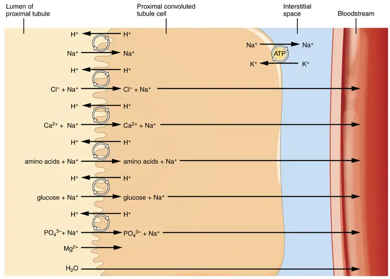
More substances move across the membranes of the PCT than any other portion of the nephron. Many of these substances (amino acids and glucose) use symport mechanisms for transport along with Na+. Antiport, active transport, diffusion, and facilitated diffusion are additional mechanisms by which substances are moved from one side of a membrane to the other. Recall that cells have two surfaces: apical and basal. The apical surface is the one facing the lumen or open space of a cavity or tube, in this case, the inside of the PCT. The basal surface of the cell faces the connective tissue base to which the cell attaches (basement membrane) or the cell membrane closer to the basement membrane if there is a stratified layer of cells. In the PCT, there is a single layer of simple cuboidal endothelial cells against the basement membrane. The numbers and particular types of pumps and channels vary between the apical and basilar surfaces. A few of the substances that are transported with Na+ (symport mechanism) on the apical membrane include Cl–, Ca++, amino acids, glucose, and \(\text{PO}_{4}^{3-}\). Sodium is actively exchanged for K+ using ATP on the basal membrane. Most of the substances transported by a symport mechanism on the apical membrane are transported by facilitated diffusion on the basal membrane. At least three ions, K+, Ca++, and Mg++, diffuse laterally between adjacent cell membranes (transcellular).
About 67 percent of the water, Na+, and K+ entering the nephron is reabsorbed in the PCT and returned to the circulation. Almost 100 percent of glucose, amino acids, and other organic substances such as vitamins are normally recovered here. Some glucose may appear in the urine if circulating glucose levels are high enough that all the glucose transporters in the PCT are saturated, so that their capacity to move glucose is exceeded (transport maximum, or Tm). In males, the maximum amount of glucose that can be recovered is about 375 mg/min, whereas in females, it is about 300 mg/min. This recovery rate translates to an arterial concentration of about 200 mg/dL. Though an exceptionally high sugar intake might cause sugar to appear briefly in the urine, the appearance of glycosuria usually points to type I or II diabetes mellitus. The transport of glucose from the lumen of the PCT to the interstitial space is similar to the way it is absorbed by the small intestine. Both glucose and Na+ bind simultaneously to the same symport proteins on the apical surface of the cell to be transported in the same direction, toward the interstitial space. Sodium moves down its electrochemical and concentration gradient into the cell and takes glucose with it. Na+ is then actively pumped out of the cell at the basal surface of the cell into the interstitial space. Glucose leaves the cell to enter the interstitial space by facilitated diffusion. The energy to move glucose comes from the Na+/K+ ATPase that pumps Na+ out of the cell on the basal surface. Fifty percent of Cl–and variable quantities of Ca++, Mg++, and \(\text{HPO}_{4}^{2-}\) are also recovered in the PCT.
Recovery of bicarbonate (HCO3–) is vital to the maintenance of acid–base balance, since it is a very powerful and fast-acting buffer. An important enzyme is used to catalyze this mechanism: carbonic anhydrase (CA). This same enzyme and reaction is used in red blood cells in the transportation of CO2, in the stomach to produce hydrochloric acid, and in the pancreas to produce HCO3– to buffer acidic chyme from the stomach. In the kidney, most of the CA is located within the cell, but a small amount is bound to the brush border of the membrane on the apical surface of the cell. In the lumen of the PCT, HCO3– combines with hydrogen ions to form carbonic acid (H2CO3). This is enzymatically catalyzed into CO2 and water, which diffuse across the apical membrane into the cell. Water can move osmotically across the lipid bilayer membrane due to the presence of aquaporin water channels. Inside the cell, the reverse reaction occurs to produce bicarbonate ions (HCO3–). These bicarbonate ions are cotransported with Na+ across the basal membrane to the interstitial space around the PCT (Figure 25.19). At the same time this is occurring, a Na+/H+ antiporter excretes H+ into the lumen, while it recovers Na+. Note how the hydrogen ion is recycled so that bicarbonate can be recovered. Also, note that a Na+ gradient is created by the Na+/K+ pump.
The significant recovery of solutes from the PCT lumen to the interstitial space creates an osmotic gradient that promotes water recovery. As noted before, water moves through channels created by the aquaporin proteins. These proteins are found in all cells in varying amounts and help regulate water movement across membranes and through cells by creating a passageway across the hydrophobic lipid bilayer membrane. Changing the number of aquaporin proteins in membranes of the collecting ducts also helps to regulate the osmolarity of the blood. The movement of many positively charged ions also creates an electrochemical gradient. This charge promotes the movement of negative ions toward the interstitial spaces and the movement of positive ions toward the lumen.
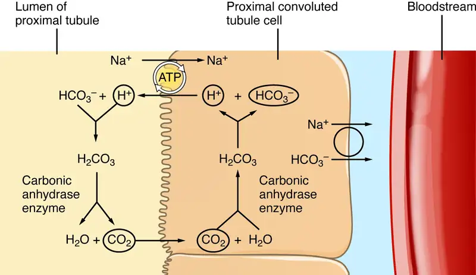
Reabsorption and Secretion in the Loop of Henle¶
The loop of Henle consists of two sections: thick and thin descending and thin and thick ascending sections. The loops of cortical nephrons do not extend into the renal medulla very far, if at all. Juxtamedullary nephrons have loops that extend variable distances, some very deep into the medulla. The descending and ascending portions of the loop are highly specialized to enable recovery of much of the Na+ and water that were filtered by the glomerulus. As the forming urine moves through the loop, the osmolarity will change from isosmotic with blood (about 278–300 mOsmol/kg) to both a very hypertonic solution of about 1200 mOsmol/kg and a very hypotonic solution of about 100 mOsmol/kg. These changes are accomplished by osmosis in the descending limb and active transport in the ascending limb. Solutes and water recovered from these loops are returned to the circulation by way of the vasa recta.
Descending Loop¶
The majority of the descending loop is comprised of simple squamous epithelial cells; to simplify the function of the loop, this discussion focuses on these cells. These membranes have permanent aquaporin channel proteins that allow unrestricted movement of water from the descending loop into the surrounding interstitium as osmolarity increases from about 300 mOsmol/kg to about 1200 mOsmol/kg in the filtrate. This increase results in reabsorption of up to 15 percent of the water entering the nephron. Modest amounts of urea, Na+, and other ions are also recovered here.
Most of the solutes that were filtered in the glomerulus have now been recovered along with a majority of water, about 82 percent. As the forming urine enters the ascending loop, major adjustments will be made to the concentration of solutes to create what you perceive as urine.
Ascending Loop¶
The ascending loop is made of very short thin and longer thick portions. Once again, to simplify the function, this section only considers the thick portion. The thick portion is lined with simple cuboidal epithelium without a brush border. It is completely impermeable to water due to the absence of aquaporin proteins, but ions, mainly Na+ and CL–, are actively reabsorbed by a cotransport system. This has two significant effects: Removal of NaCl while retaining water leads to a hypoosomotic filtrate by the time it reaches the DCT; pumping NaCl into the interstitial space contributes to the hyperosmotic environment in the kidney medulla.
The Na+/K+ ATPase pumps in the basal membrane create an electrochemical gradient, allowing reabsorption of Cl– by Na+/Cl– symporters in the apical membrane. At the same time that Na+ is actively pumped from the basal side of the cell into the interstitial fluid, Cl– follows the Na+from the lumeninto the interstitial fluid by a paracellular route between cells through leaky tight junctions. These are found between cells of the ascending loop, where they allow certain solutes to move according to their concentration gradient. Most of the K+ that enters the cell via symporters returns to the lumen (down its concentration gradient) through leaky channels in the apical membrane. Note the environment now created in the interstitial space: With the “back door exiting” K+, there is one Na+ and two Cl–ions left in the interstitium surrounding the ascending loop. Therefore, in comparison to the lumen of the loop, the interstitial space is now a negatively charged environment. This negative charge attracts cations (Na+, K+, Ca++, and Mg++) from the lumen via a paracellular route to the interstitial space and vasa recta.
Countercurrent Multiplier System¶
The structure of the loop of Henle and associated vasa recta create a countercurrent multiplier system (Figure 25.20). The countercurrent term comes from the fact that the descending and ascending loops are next to each other and their fluid flows in opposite directions (countercurrent). The multiplier term is due to the action of solute pumps that increase (multiply) the concentrations of urea and Na+ deep in the medulla.
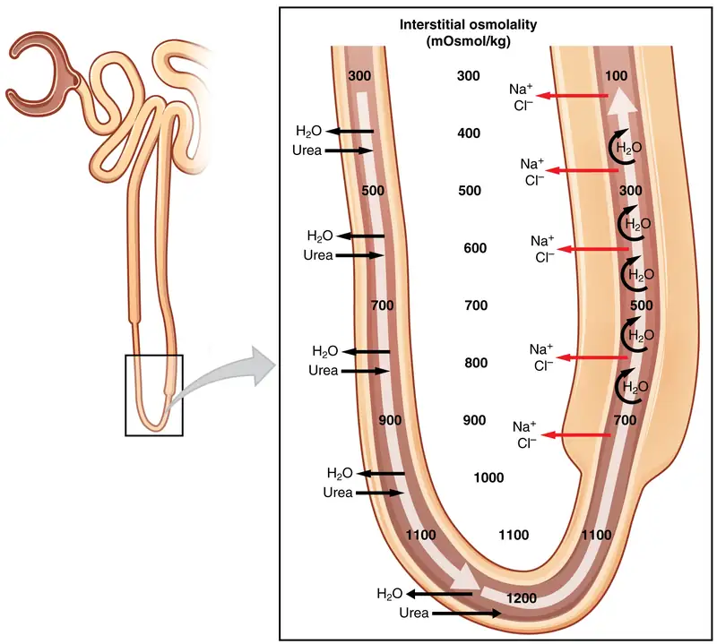
As discussed above, the ascending loop actively reabsorbs NaCl out of the forming urine into the interstitial spaces. In addition, collecting ducts have urea pumps that actively pump urea into the interstitial spaces. This results in the recovery of NaCl to the circulation via the vasa recta and creates a high osmolar environment in the depths of the medulla.
Ammonia (NH3) is a toxic byproduct of protein metabolism. It is formed as amino acids are deaminated by liver hepatocytes. That means that the amine group, NH2, is removed from amino acids as they are broken down. Most of the resulting ammonia is converted into urea by liver hepatocytes. Urea is not only less toxic but is utilized to aid in the recovery of water by the loop of Henle and collecting ducts. At the same time that water is freely diffusing out of the descending loop through aquaporin channels into the interstitial spaces of the medulla, urea freely diffuses into the lumen of the descending loop as it descends deeper into the medulla, much of it to be reabsorbed from the forming urine when it reaches the collecting duct. Thus, the movement of Na+ and urea into the interstitial spaces by these mechanisms creates the hyperosmotic environment of the medulla. The net result of this countercurrent multiplier system is to recover both water and Na+ in the circulation.
The amino acid glutamine can be deaminated by the kidney. As NH2 from the amino acid is converted into NH3 and pumped into the lumen of the PCT, Na+ and HCO3– are excreted into the interstitial fluid of the renal pyramid via a symport mechanism. When this process occurs in the cells of the PCT, the added benefit is a net loss of a hydrogen ion (complexed to ammonia to form the weak acid NH4+) in the urine and a gain of a bicarbonate ion (HCO3–) in the blood. Ammonia and bicarbonate are exchanged in a one-to-one ratio. This exchange is yet another means by which the body can buffer and excrete acid. The presence of aquaporin channels in the descending loop allows prodigious quantities of water to leave the loop and enter the hyperosmolar interstitium of the pyramid, where it is returned to the circulation by the vasa recta. As the loop turns to become the ascending loop, there is an absence of aquaporin channels, so water cannot leave the loop. However, in the basal membrane of cells of the thick ascending loop, ATPase pumps actively remove Na+ from the cell. A Na+/K+/2Cl–symporter in the apical membrane passively allows these ions to enter the cell cytoplasm from the lumen of the loop down a concentration gradient created by the pump. This mechanism works to dilute the fluid of the ascending loop ultimately to approximately 50–100 mOsmol/L.
At the transition from the DCT to the collecting duct, about 20 percent of the original water is still present and about 10 percent of the sodium. If no other mechanism for water reabsorption existed, about 20–25 liters of urine would be produced. Now consider what is happening in the adjacent capillaries, the vasa recta. They are recovering both solutes and water at a rate that preserves the countercurrent multiplier system. In general, blood flows slowly in capillaries to allow time for exchange of nutrients and wastes. In the vasa recta particularly, this rate of flow is important for two additional reasons. The flow must be slow to allow blood cells to lose and regain water without either crenating or bursting. Second, a rapid flow would remove too much Na+ and urea, destroying the osmolar gradient that is necessary for the recovery of solutes and water. Thus, by flowing slowly to preserve the countercurrent mechanism, as the vasa recta descend, Na+ and urea are freely able to enter the capillary, while water freely leaves; as they ascend, Na+ and urea are secreted into the surrounding medulla, while water reenters and is removed.
Interactive
Watch this video to learn about the countercurrent multiplier system.
Reabsorption and Secretion in the Distal Convoluted Tubule¶
Approximately 80 percent of filtered water has been recovered by the time the dilute forming urine enters the DCT. The DCT will recover another 10–15 percent before the forming urine enters the collecting ducts. Aldosterone increases the amount of Na+/K+ ATPase in the basal membrane of the DCT and collecting duct. The movement of Na+ out of the lumen of the collecting duct creates a negative charge that promotes the movement of Cl–out of the lumen into the interstitial space by a paracellular route across tight junctions. Peritubular capillaries receive the solutes and water, returning them to the circulation.
Cells of the DCT also recover Ca++ from the filtrate. Receptors for parathyroid hormone (PTH) are found in DCT cells and when bound to PTH, induce the insertion of calcium channels on their luminal surface. The channels enhance Ca++ recovery from the forming urine. In addition, as Na+ is pumped out of the cell, the resulting electrochemical gradient attracts Ca++ into the cell. Finally, calcitriol (1,25 dihydroxyvitamin D, the active form of vitamin D) is very important for calcium recovery. It induces the production of calcium-binding proteins that transport Ca++ into the cell. These binding proteins are also important for the movement of calcium inside the cell and aid in exocytosis of calcium across the basolateral membrane. Any Ca++ not reabsorbed at this point is lost in the urine.
Collecting Ducts and Recovery of Water¶
Solutes move across the membranes of the collecting ducts, which contain two distinct cell types, principal cells and intercalated cells. A principal cell possesses channels for the recovery or loss of sodium and potassium. An intercalated cell secretes or absorbs acid or bicarbonate. As in other portions of the nephron, there is an array of micromachines (pumps and channels) on display in the membranes of these cells.
Regulation of urine volume and osmolarity are major functions of the collecting ducts. By varying the amount of water that is recovered, the collecting ducts play a major role in maintaining the body’s normal osmolarity. If the blood becomes hyperosmotic, the collecting ducts recover more water to dilute the blood; if the blood becomes hyposmotic, the collecting ducts recover less of the water, leading to concentration of the blood. Another way of saying this is: If plasma osmolarity rises, more water is recovered and urine volume decreases; if plasma osmolarity decreases, less water is recovered and urine volume increases. This function is regulated by the posterior pituitary hormone ADH (vasopressin). With mild dehydration, plasma osmolarity rises slightly. This increase is detected by osmoreceptors in the hypothalamus, which stimulates the release of ADH from the posterior pituitary. If plasma osmolarity decreases slightly, the opposite occurs.
When stimulated by ADH, aquaporin channels are inserted into the apical membrane of principal cells, which line the collecting ducts. As the ducts descend through the medulla, the osmolarity surrounding them increases (due to the countercurrent mechanisms described above). If aquaporin water channels are present, water will be osmotically pulled from the collecting duct into the surrounding interstitial space and into the peritubular capillaries. Therefore, the final urine will be more concentrated. If less ADH is secreted, fewer aquaporin channels are inserted and less water is recovered, resulting in dilute urine. By altering the number of aquaporin channels, the volume of water recovered or lost is altered. This, in turn, regulates the blood osmolarity, blood pressure, and osmolarity of the urine.
As Na+ is pumped from the forming urine, water is passively recaptured for the circulation; this preservation of vascular volume is critically important for the maintenance of a normal blood pressure. Aldosterone is secreted by the adrenal cortex in response to angiotensin II stimulation. As an extremely potent vasoconstrictor, angiotensin II functions immediately to increase blood pressure. By also stimulating aldosterone production, it provides a longer-lasting mechanism to support blood pressure by maintaining vascular volume (water recovery).
In addition to receptors for ADH, principal cells have receptors for the steroid hormone aldosterone. While ADH is primarily involved in the regulation of water recovery, aldosterone regulates Na+ recovery. Aldosterone stimulates principal cells to manufacture luminal Na+ and K+ channels as well as Na+/K+ ATPase pumps on the basal membrane of the cells. When aldosterone output increases, more Na+ is recovered from the forming urine and water follows the Na+ passively. As the pump recovers Na+ for the body, it is also pumping K+ into the forming urine, since the pump moves K+ in the opposite direction. When aldosterone decreases, more Na+ remains in the forming urine and more K+ is recovered in the circulation. Symport channels move Na+ and Cl–together. Still other channels in the principal cells secrete K+ into the collecting duct in direct proportion to the recovery of Na+.
Intercalated cells play significant roles in regulating blood pH. Intercalated cells reabsorb K+ and HCO3– while secreting H+. This function lowers the acidity of the plasma while increasing the acidity of the urine.
25.7 Regulation of Renal Blood Flow¶
Learning Objectives
By the end of this section, you will be able to:
- Describe the myogenic and tubuloglomerular feedback mechanisms and explain how they affect urine volume and composition
- Describe the function of the juxtaglomerular apparatus
It is vital that the flow of blood through the kidney be at a suitable rate to allow for filtration. This rate determines how much solute is retained or discarded, how much water is retained or discarded, and ultimately, the osmolarity of blood and the blood pressure of the body.
Sympathetic Nerves¶
The kidneys are innervated by the sympathetic neurons of the autonomic nervous system via the celiac plexus and splanchnic nerves. Reduction of sympathetic stimulation results in vasodilation and increased blood flow through the kidneys during resting conditions. When the frequency of action potentials increases, the arteriolar smooth muscle constricts (vasoconstriction), resulting in diminished glomerular flow, so less filtration occurs. Under conditions of stress, sympathetic nervous activity increases, resulting in the direct vasoconstriction of afferent arterioles (norepinephrine effect) as well as stimulation of the adrenal medulla. The adrenal medulla, in turn, produces a generalized vasoconstriction through the release of epinephrine. This includes vasoconstriction of the afferent arterioles, further reducing the volume of blood flowing through the kidneys. This process redirects blood to other organs with more immediate needs. If blood pressure falls, the sympathetic nerves will also stimulate the release of renin. Additional renin increases production of the powerful vasoconstrictor angiotensin II. Angiotensin II, as discussed above, will also stimulate aldosterone production to augment blood volume through retention of more Na+ and water. Only a 10 mm Hg pressure differential across the glomerulus is required for normal GFR, so very small changes in afferent arterial pressure significantly increase or decrease GFR.
Autoregulation¶
The kidneys are very effective at regulating the rate of blood flow over a wide range of blood pressures. Your blood pressure will decrease when you are relaxed or sleeping. It will increase when exercising. Yet, despite these changes, the filtration rate through the kidney will change very little. This is due to two internal autoregulatory mechanisms that operate without outside influence: the myogenic mechanism and the tubuloglomerular feedback mechanism.
Arteriole Myogenic Mechanism¶
The myogenic mechanism regulating blood flow within the kidney depends upon a characteristic shared by most smooth muscle cells of the body. When you stretch a smooth muscle cell, it contracts; when you stop, it relaxes, restoring its resting length. This mechanism works in the afferent arteriole that supplies the glomerulus. When blood pressure increases, smooth muscle cells in the wall of the arteriole are stretched and respond by contracting to resist the pressure, resulting in little change in flow. When blood pressure drops, the same smooth muscle cells relax to lower resistance, allowing a continued even flow of blood.
Tubuloglomerular Feedback¶
The tubuloglomerular feedback mechanism involves the JGA and a paracrine signaling mechanism utilizing ATP, adenosine, and nitric oxide (NO). This mechanism stimulates either contraction or relaxation of afferent arteriolar smooth muscle cells (Table 25.7). Recall that the DCT is in intimate contact with the afferent and efferent arterioles of the glomerulus. Specialized macula densa cells in this segment of the tubule respond to changes in the fluid flow rate and Na+ concentration. As GFR increases, there is less time for NaCl to be reabsorbed in the PCT, resulting in higher osmolarity in the filtrate. The increased fluid movement more strongly deflects single nonmotile cilia on macula densa cells. This increased osmolarity of the forming urine, and the greater flow rate within the DCT, activates macula densa cells to respond by releasing ATP and adenosine (a metabolite of ATP). ATP and adenosine act locally as paracrine factors to stimulate the myogenic juxtaglomerular cells of the afferent arteriole to constrict, slowing blood flow and reducing GFR. Conversely, when GFR decreases, less Na+ is in the forming urine, and most will be reabsorbed before reaching the macula densa, which will result in decreased ATP and adenosine, allowing the afferent arteriole to dilate and increase GFR. NO has the opposite effect, relaxing the afferent arteriole at the same time ATP and adenosine are stimulating it to contract. Thus, NO fine-tunes the effects of adenosine and ATP on GFR.
Table 25.7
| Paracrine Mechanisms Controlling Glomerular Filtration Rate | |||
|---|---|---|---|
| Change in GFR | NaCl Absorption | Role of ATP and adenosine/Role of NO | Effect on GFR |
| Increased GFR | Tubular NaCl increases | ATP and adenosine increase, causing vasoconstriction | Vasoconstriction slows GFR |
| Decreased GFR | Tubular NaCl decreases | ATP and adenosine decrease, causing vasodilation | Vasodilation increases GFR |
| Increased GFR | Tubular NaCl increases | NO increases, causing vasodilation | Vasodilation increases GFR |
| Decreased GFR | Tubular NaCl decreases | NO decreases, causing vasoconstricton | Vasoconstriction decreases GFR |
25.8 Endocrine Regulation of Kidney Function¶
Learning Objectives
By the end of this section, you will be able to:
- Describe how each of the following functions in the extrinsic control of GFR: renin–angiotensin mechanism, natriuretic peptides, and sympathetic adrenergic activity
- Describe how each of the following works to regulate reabsorption and secretion, so as to affect urine volume and composition: renin–angiotensin system, aldosterone, antidiuretic hormone, and natriuretic peptides
- Name and define the roles of other hormones that regulate kidney control
Several hormones have specific, important roles in regulating kidney function. They act to stimulate or inhibit blood flow. Some of these are endocrine, acting from a distance, whereas others are paracrine, acting locally.
Renin–Angiotensin–Aldosterone¶
Renin is an enzyme that is produced by the juxtaglomerular (JG) cells of the afferent arteriole at the JGA. It enzymatically converts angiotensinogen (made by the liver, freely circulating) into angiotensin I. Its release is stimulated by prostaglandins and NO from the JGA in response to decreased extracellular fluid volume.
ACE is not a hormone but it is functionally important in regulating systemic blood pressure and kidney function. It is produced in the lungs but binds to the surfaces of endothelial cells in the afferent arterioles and glomerulus. It enzymatically converts inactive angiotensin I into active angiotensin II. ACE is important in raising blood pressure. People with high blood pressure are sometimes prescribed ACE inhibitors to lower their blood pressure.
Angiotensin II is a potent vasoconstrictor that plays an immediate role in the regulation of blood pressure. It acts systemically to cause vasoconstriction as well as constriction of both the afferent and efferent arterioles of the glomerulus. In instances of blood loss or dehydration, it reduces both GFR and renal blood flow, thereby limiting fluid loss and preserving blood volume. Its release is usually stimulated by decreases in blood pressure, and so the preservation of adequate blood pressure is its primary role.
Aldosterone, often called the “salt-retaining hormone,” is released from the adrenal cortex in response to angiotensin II or directly in response to increased plasma K+. It promotes Na+ reabsorption by the nephron, promoting the retention of water. It is also important in regulating K+,promoting its excretion. (This dual effect on two minerals and its origin in the adrenal cortex explains its designation as a mineralocorticoid.) As a result, renin has an immediate effect on blood pressure due to angiotensin II–stimulated vasoconstriction and a prolonged effect through Na+ recovery due to aldosterone. At the same time that aldosterone causes increased recovery of Na+, it also causes greater loss of K+. Progesterone is a steroid that is structurally similar to aldosterone. It binds to the aldosterone receptor and weakly stimulates Na+ reabsorption and increased water recovery. This process is unimportant in males due to low levels of circulating progesterone. It may cause increased retention of water during some periods of the menstrual cycle in females when progesterone levels increase.
Antidiuretic Hormone (ADH)¶
Diuretics are drugs that can increase water loss by interfering with the recapture of solutes and water from the forming urine. They are often prescribed to lower blood pressure. Coffee, tea, and alcoholic beverages are familiar diuretics. ADH, a 9-amino acid peptide released by the posterior pituitary, works to do the exact opposite. It promotes the recovery of water, decreases urine volume, and maintains plasma osmolarity and blood pressure. It does so by stimulating the movement of aquaporin proteins into the apical cell membrane of principal cells of the collecting ducts to form water channels, allowing the transcellular movement of water from the lumen of the collecting duct into the interstitial space in the medulla of the kidney by osmosis. From there, it enters the vasa recta capillaries to return to the circulation. Water is attracted by the high osmotic environment of the deep kidney medulla.
Endothelin¶
Endothelins, 21-amino acid peptides, are extremely powerful vasoconstrictors. They are produced by endothelial cells of the renal blood vessels, mesangial cells, and cells of the DCT. Hormones stimulating endothelin release include angiotensin II, bradykinin, and epinephrine. They do not typically influence blood pressure in healthy people. On the other hand, in people with diabetic kidney disease, endothelin is chronically elevated, resulting in sodium retention. They also diminish GFR by damaging the podocytes and by potently vasoconstricting both the afferent and efferent arterioles.
Natriuretic Hormones¶
Natriuretic hormones are peptides that stimulate the kidneys to excrete sodium—an effect opposite that of aldosterone. Natriuretic hormones act by inhibiting aldosterone release and therefore inhibiting Na+ recovery in the collecting ducts. If Na+ remains in the forming urine, its osmotic force will cause a concurrent loss of water. Natriuretic hormones also inhibit ADH release, which of course will result in less water recovery. Therefore, natriuretic peptides inhibit both Na+ and water recovery. One example from this family of hormones is atrial natriuretic hormone (ANH), a 28-amino acid peptide produced by heart atria in response to over-stretching of the atrial wall. The over-stretching occurs in persons with elevated blood pressure or heart failure. It increases GFR through concurrent vasodilation of the afferent arteriole and vasoconstriction of the efferent arteriole. These events lead to an increased loss of water and sodium in the forming urine. It also decreases sodium reabsorption in the DCT. There is also B-type natriuretic peptide (BNP) of 32 amino acids produced in the ventricles of the heart. It has a 10-fold lower affinity for its receptor, so its effects are less than those of ANH. Its role may be to provide “fine tuning” for the regulation of blood pressure. BNP’s longer biologic half-life makes it a good diagnostic marker of congestive heart failure (Figure 25.21).
Parathyroid Hormone¶
Parathyroid hormone (PTH) is an 84-amino acid peptide produced by the parathyroid glands in response to decreased circulating Ca++ levels. Among its targets is the PCT, where it stimulates the hydroxylation of calcidiol to calcitriol (1,25-hydroxycholecalciferol, the active form of vitamin D). It also blocks reabsorption of phosphate (PO3–), causing its loss in the urine. The retention of phosphate would result in the formation of calcium phosphate in the plasma, reducing circulating Ca++ levels. By ridding the blood of phosphate, higher circulating Ca++ levels are permitted.
![This table shows the stimulus, effect on GFR (glomerular filtration rate), and effect on RBF (renal blood flow) for a variety of vasoconstrictors and vasodilators. The first vasoconstrictor is input from the sympathetic nerves that result in the secretion of epinephrine and norepinephrine. The stimulus is a decrease in extracellular fluid volume (ECFV). The second vasoconstrictor is angiotensin II. The stimulus is a decrease in ECFV. The third vasoconstrictor is endothelin. The stimulus is an increase in stretch, bradykinin, angiotensin II, and epinephrine along with a decrease in ECFV. All three of these vasoconstrictors decrease GFR and also decrease RBF. The first vasodilator is the prostaglandins PGE1, PGE2, and PGI2. The stimulus is a decrease in ECFV, an increase in shear stress, and an increase in angiotensin II. The second vasodilator is nitric oxide (NO). The stimulus is increasing shear stress, acetylcholine, histamine, bradykinin, ATP, and adenosine. The third vasodilator is bradykinin. The stimulus is the presence of prostaglandins and a decrease in angiotensin-converting enzyme. The fourth vasodilator is natriuretic peptides, including ANP and B-type. The stimulus is an increase in ECFV. All four of the vasodilators increase GFR and also increase RBF, with the exception of the natriuretic peptides, which cause no change in RBF. Prostaglandins also either increase or have no effect on GFR.](img/2629-major-hormones-that-influence-gfr-and-renal-blood-flow.webp)
25.9 Regulation of Fluid Volume and Composition¶
Learning Objectives
By the end of this section, you will be able to:
- Explain the mechanism of action of diuretics
- Explain why the differential permeability or impermeability of specific sections of the nephron tubules is necessary for urine formation
The major hormones influencing total body water are ADH, aldosterone, and ANH. Circumstances that lead to fluid depletion in the body include blood loss and dehydration. Homeostasis requires that volume and osmolarity be preserved. Blood volume is important in maintaining sufficient blood pressure, and there are nonrenal mechanisms involved in its preservation, including vasoconstriction, which can act within seconds of a drop in pressure. Thirst mechanisms are also activated to promote the consumption of water lost through respiration, evaporation, or urination. Hormonal mechanisms are activated to recover volume while maintaining a normal osmotic environment. These mechanisms act principally on the kidney.
Volume-sensing Mechanisms¶
The body cannot directly measure blood volume, but blood pressure can be measured. Blood pressure often reflects blood volume and is measured by baroreceptors in the aorta and carotid sinuses. When blood pressure increases, baroreceptors send more frequent action potentials to the central nervous system, leading to widespread vasodilation. Included in this vasodilation are the afferent arterioles supplying the glomerulus, resulting in increased GFR, and water loss by the kidneys. If pressure decreases, fewer action potentials travel to the central nervous system, resulting in more sympathetic stimulation-producing vasoconstriction, which will result in decreased filtration and GFR, and water loss.
Decreased blood pressure is also sensed by the granular cells in the afferent arteriole of the JGA. In response, the enzyme renin is released. You saw earlier in the chapter that renin activity leads to an almost immediate rise in blood pressure as activated angiotensin II produces vasoconstriction. The rise in pressure is sustained by the aldosterone effects initiated by angiotensin II; this includes an increase in Na+ retention and water volume. As an aside, late in the menstrual cycle, progesterone has a modest influence on water retention. Due to its structural similarity to aldosterone, progesterone binds to the aldosterone receptor in the collecting duct of the kidney, causing the same, albeit weaker, effect on Na+ and water retention.
Cardiomyocytes of the atria also respond to greater stretch (as blood pressure rises) by secreting ANH. ANH opposes the action of aldosterone by inhibiting the recovery of Na+ by the DCT and collecting ducts. More Na+ is lost, and as water follows, total blood volume and pressure decline. In low-pressure states, ANH does not seem to have much effect.
ADH is also called vasopressin. Early researchers found that in cases of unusually high secretion of ADH, the hormone caused vasoconstriction (vasopressor activity, hence the name). Only later were its antidiuretic properties identified. Synthetic ADH is still used occasionally to stem life-threatening esophagus bleeding in alcoholics.
When blood volume drops 5–10 percent, causing a decrease in blood pressure, there is a rapid and significant increase in ADH release from the posterior pituitary. Immediate vasoconstriction to increase blood pressure is the result. ADH also causes activation of aquaporin channels in the collecting ducts to affect the recovery of water to help restore vascular volume.
Diuretics and Fluid Volume¶
A diuretic is a compound that increases urine volume. Three familiar drinks contain diuretic compounds: coffee, tea, and alcohol. The caffeine in coffee and tea works by promoting vasodilation in the nephron, which increases GFR. Alcohol increases GFR by inhibiting ADH release from the posterior pituitary, resulting in less water recovery by the collecting duct. In cases of high blood pressure, diuretics may be prescribed to reduce blood volume and, thereby, reduce blood pressure. The most frequently prescribed anti-hypertensive diuretic is hydrochlorothiazide. It inhibits the Na+/ Cl–symporter in the DCT and collecting duct. The result is a loss of Na+ with water following passively by osmosis.
Osmotic diuretics promote water loss by osmosis. An example is the indigestible sugar mannitol, which is most often administered to reduce brain swelling after head injury. However, it is not the only sugar that can produce a diuretic effect. In cases of poorly controlled diabetes mellitus, glucose levels exceed the capacity of the tubular glucose symporters, resulting in glucose in the urine. The unrecovered glucose becomes a powerful osmotic diuretic. Classically, in the days before glucose could be detected in the blood and urine, clinicians identified diabetes mellitus by the three Ps: polyuria (diuresis), polydipsia (increased thirst), and polyphagia (increased hunger).
Regulation of Extracellular Na+¶
Sodium has a very strong osmotic effect and attracts water. It plays a larger role in the osmolarity of the plasma than any other circulating component of the blood. If there is too much Na+ present, either due to poor control or excess dietary consumption, a series of metabolic problems ensue. There is an increase in total volume of water, which leads to hypertension (high blood pressure). Over a long period, this increases the risk of serious complications such as heart attacks, strokes, and aneurysms. It can also contribute to system-wide edema (swelling).
Mechanisms for regulating Na+ concentration include the renin–angiotensin–aldosterone system and ADH (see Figure 25.14). Aldosterone stimulates the uptake of Na+ on the apical cell membrane of cells in the DCT and collecting ducts, whereas ADH helps to regulate Na+ concentration indirectly by regulating the reabsorption of water.
Regulation of Extracellular K+¶
Potassium is present in a 30-fold greater concentration inside the cell than outside the cell. A generalization can be made that K+ and Na+ concentrations will move in opposite directions. When more Na+ is reabsorbed, more K+ is secreted; when less Na+ is reabsorbed (leading to excretion by the kidney), more K+ is retained. When aldosterone causes a recovery of Na+ in the nephron, a negative electrical gradient is created that promotes the secretion of K+ and Cl–into the lumen.
Regulation of Cl–¶
Chloride is important in acid–base balance in the extracellular space and has other functions, such as in the stomach, where it combines with hydrogen ions in the stomach lumen to form hydrochloric acid, aiding digestion. Its close association with Na+ in the extracellular environment makes it the dominant anion of this compartment, and its regulation closely mirrors that of Na+.
Regulation of Ca++ and Phosphate¶
The parathyroid glands monitor and respond to circulating levels of Ca++ in the blood. When levels drop too low, PTH is released to stimulate the DCT to reabsorb Ca++from the forming urine. When levels are adequate or high, less PTH is released and more Ca++ remains in the forming urine to be lost. Phosphate levels move in the opposite direction. When Ca++ levels are low, PTH inhibits reabsorption of \(\text{HPO}_{4}^{2-}\) so that its blood level drops, allowing Ca++ levels to rise. PTH also stimulates the renal conversion of calcidiol into calcitriol, the active form of vitamin D. Calcitriol then stimulates the intestines to absorb more Ca++ from the diet.
Regulation of H+, Bicarbonate, and pH¶
The acid–base homeostasis of the body is a function of chemical buffers and physiologic buffering provided by the lungs and kidneys. Buffers, especially proteins, \({\text{HCO}_{3}}^{-}\), and ammonia have a very large capacity to absorb or release H+ as needed to resist a change in pH. They can act within fractions of a second. The lungs can rid the body of excess acid very rapidly (seconds to minutes) through the conversion of HCO3– into CO2, which is then exhaled. It is rapid but has limited capacity in the face of a significant acid challenge. The kidneys can rid the body of both acid and base. The renal capacity is large but slow (minutes to hours). The cells of the PCT actively secrete H+ into the forming urine as Na+ is reabsorbed. The body rids itself of excess H+ and raises blood pH. In the collecting ducts, the apical surfaces of intercalated cells have proton pumps that actively secrete H+ into the luminal, forming urine to remove it from the body.
As hydrogen ions are pumped into the forming urine, it is buffered by bicarbonate (HCO3–), H2PO4–(dihydrogen phosphate ion), or ammonia (forming NH4+, ammonium ion). Urine pH typically varies in a normal range from 4.5 to 8.0.
Regulation of Nitrogen Wastes¶
Nitrogen wastes are produced by the breakdown of proteins during normal metabolism. Proteins are broken down into amino acids, which in turn are deaminated by having their nitrogen groups removed. Deamination converts the amino (NH2) groups into ammonia (NH3), ammonium ion (NH4+), urea, or uric acid (Figure 25.22). Ammonia is extremely toxic, so most of it is very rapidly converted into urea in the liver. Human urinary wastes typically contain primarily urea with small amounts of ammonium and very little uric acid.
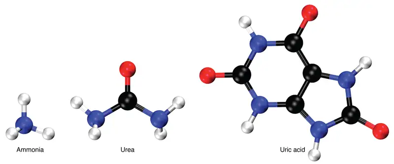
Elimination of Drugs and Hormones¶
Water-soluble drugs may be excreted in the urine and are influenced by one or all of the following processes: glomerular filtration, tubular secretion, or tubular reabsorption. Drugs that are structurally small can be filtered by the glomerulus with the filtrate. Large drug molecules such as heparin or those that are bound to plasma proteins cannot be filtered and are not readily eliminated. Some drugs can be eliminated by carrier proteins that enable secretion of the drug into the tubule lumen. There are specific carriers that eliminate basic (such as dopamine or histamine) or acidic drugs (such as penicillin or indomethacin). As is the case with other substances, drugs may be both filtered and reabsorbed passively along a concentration gradient.
25.10 The Urinary System and Homeostasis¶
Learning Objectives
By the end of this section, you will be able to:
- Describe the role of the kidneys in vitamin D activation
- Describe the role of the kidneys in regulating erythropoiesis
- Provide specific examples to demonstrate how the urinary system responds to maintain homeostasis in the body
- Explain how the urinary system relates to other body systems in maintaining homeostasis
- Predict factors or situations affecting the urinary system that could disrupt homeostasis
- Predict the types of problems that would occur in the body if the urinary system could not maintain homeostasis
All systems of the body are interrelated. A change in one system may affect all other systems in the body, with mild to devastating effects. A failure of urinary continence can be embarrassing and inconvenient, but is not life threatening. The loss of other urinary functions may prove fatal. A failure to synthesize vitamin D is one such example.
Vitamin D Synthesis¶
In order for vitamin D to become active, it must undergo a hydroxylation reaction in the kidney, that is, an –OH group must be added to calcidiol to make calcitriol (1,25-dihydroxycholecalciferol). Activated vitamin D is important for absorption of Ca++ in the digestive tract, its reabsorption in the kidney, and the maintenance of normal serum concentrations of Ca++ and phosphate. Calcium is vitally important in bone health, muscle contraction, hormone secretion, and neurotransmitter release. Inadequate Ca++ leads to disorders like osteoporosis and osteomalacia in adults and rickets in children. Deficits may also result in problems with cell proliferation, neuromuscular function, blood clotting, and the inflammatory response. Recent research has confirmed that vitamin D receptors are present in most, if not all, cells of the body, reflecting the systemic importance of vitamin D. Many scientists have suggested it be referred to as a hormone rather than a vitamin.
Erythropoiesis¶
EPO is a 193-amino acid protein that stimulates the formation of red blood cells in the bone marrow. The kidney produces 85 percent of circulating EPO; the liver, the remainder. If you move to a higher altitude, the partial pressure of oxygen is lower, meaning there is less pressure to push oxygen across the alveolar membrane and into the red blood cell. One way the body compensates is to manufacture more red blood cells by increasing EPO production. If you start an aerobic exercise program, your tissues will need more oxygen to cope, and the kidney will respond with more EPO. If erythrocytes are lost due to severe or prolonged bleeding, or under produced due to disease or severe malnutrition, the kidneys come to the rescue by producing more EPO. Renal failure (loss of EPO production) is associated with anemia, which makes it difficult for the body to cope with increased oxygen demands or to supply oxygen adequately even under normal conditions. Anemia diminishes performance and can be life threatening.
Blood Pressure Regulation¶
Due to osmosis, water follows where Na+ leads. Much of the water the kidneys recover from the forming urine follows the reabsorption of Na+. ADH stimulation of aquaporin channels allows for regulation of water recovery in the collecting ducts. Normally, all of the glucose is recovered, but loss of glucose control (diabetes mellitus) may result in an osmotic dieresis severe enough to produce severe dehydration and death. A loss of renal function means a loss of effective vascular volume control, leading to hypotension (low blood pressure) or hypertension (high blood pressure), which can lead to stroke, heart attack, and aneurysm formation.
The kidneys cooperate with the lungs, liver, and adrenal cortex through the renin–angiotensin–aldosterone system (see Figure 25.14). The liver synthesizes and secretes the inactive precursor angiotensinogen. When the blood pressure is low, the kidney synthesizes and releases renin. Renin converts angiotensinogen into angiotensin I, and ACE produced in the lung converts angiotensin I into biologically active angiotensin II (Figure 25.23). The immediate and short-term effect of angiotensin II is to raise blood pressure by causing widespread vasoconstriction. angiotensin II also stimulates the adrenal cortex to release the steroid hormone aldosterone, which results in renal reabsorption of Na+ and its associated osmotic recovery of water. The reabsorption of Na+helps to raise and maintain blood pressure over a longer term.
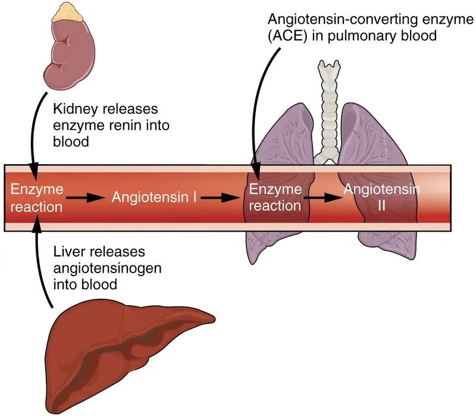
Regulation of Osmolarity¶
Blood pressure and osmolarity are regulated in a similar fashion. Severe hypo-osmolarity can cause problems like lysis (rupture) of blood cells or widespread edema, which is due to a solute imbalance. Inadequate solute concentration (such as protein) in the plasma results in water moving toward an area of greater solute concentration, in this case, the interstitial space and cell cytoplasm. If the kidney glomeruli are damaged by an autoimmune illness, large quantities of protein may be lost in the urine. The resultant drop in serum osmolarity leads to widespread edema that, if severe, may lead to damaging or fatal brain swelling. Severe hypertonic conditions may arise with severe dehydration from lack of water intake, severe vomiting, or uncontrolled diarrhea. When the kidney is unable to recover sufficient water from the forming urine, the consequences may be severe (lethargy, confusion, muscle cramps, and finally, death) .
Recovery of Electrolytes¶
Sodium, calcium, and potassium must be closely regulated. The role of Na+ and Ca++ homeostasis has been discussed at length. Failure of K+ regulation can have serious consequences on nerve conduction, skeletal muscle function, and most significantly, on cardiac muscle contraction and rhythm.
pH Regulation¶
Recall that enzymes lose their three-dimensional conformation and, therefore, their function if the pH is too acidic or basic. This loss of conformation may be a consequence of the breaking of hydrogen bonds. Move the pH away from the optimum for a specific enzyme and you may severely hamper its function throughout the body, including hormone binding, central nervous system signaling, or myocardial contraction. Proper kidney function is essential for pH homeostasis.
Everyday Connection: Stem Cells and Repair of Kidney Damage
Stem cells are unspecialized cells that can reproduce themselves via cell division, sometimes after years of inactivity. Under certain conditions, they may differentiate into tissue-specific or organ-specific cells with special functions. In some cases, stem cells may continually divide to produce a mature cell and to replace themselves. Stem cell therapy has an enormous potential to improve the quality of life or save the lives of people suffering from debilitating or life-threatening diseases. There have been several studies in animals, but since stem cell therapy is still in its infancy, there have been limited experiments in humans.
Acute kidney injury can be caused by a number of factors, including transplants and other surgeries. It affects 7–10 percent of all hospitalized patients, resulting in the deaths of 35–40 percent of inpatients. In limited studies using mesenchymal stem cells, there have been fewer instances of kidney damage after surgery, the length of hospital stays has been reduced, and there have been fewer readmissions after release.
How do these stem cells work to protect or repair the kidney? Scientists are unsure at this point, but some evidence has shown that these stem cells release several growth factors in endocrine and paracrine ways. As further studies are conducted to assess the safety and effectiveness of stem cell therapy, we will move closer to a day when kidney injury is rare, and curative treatments are routine.
Chapter Review¶
Key Terms¶
- anatomical sphincter
- smooth or skeletal muscle surrounding the lumen of a vessel or hollow organ that can restrict flow when contracted
- angiotensin I
- protein produced by the enzymatic action of renin on angiotensinogen; inactive precursor of angiotensin II
- angiotensin II
- protein produced by the enzymatic action of ACE on inactive angiotensin I; actively causes vasoconstriction and stimulates aldosterone release by the adrenal cortex
- angiotensin-converting enzyme (ACE)
- enzyme produced by the lungs that catalyzes the reaction of inactive angiotensin I into active angiotensin II
- angiotensinogen
- inactive protein in the circulation produced by the liver; precursor of angiotensin I; must be modified by the enzymes renin and ACE to be activated
- anuria
- absence of urine produced; production of 50 mL or less per day
- aquaporin
- protein-forming water channels through the lipid bilayer of the cell; allows water to cross; activation in the collecting ducts is under the control of ADH
- Bowman’s capsule
- cup-shaped sack lined by a simple squamous epithelium (parietal surface) and specialized cells called podocytes (visceral surface) that participate in the filtration process; receives the filtrate which then passes on to the PCTs
- brush border
- formed by microvilli on the surface of certain cuboidal cells; in the kidney it is found in the PCT; increases surface area for absorption in the kidney
- calyces
- cup-like structures receiving urine from the collecting ducts where it passes on to the renal pelvis and ureter
- cortical nephrons
- nephrons with loops of Henle that do not extend into the renal medulla
- countercurrent multiplier system
- involves the descending and ascending loops of Henle directing forming urine in opposing directions to create a concentration gradient when combined with variable permeability and sodium pumping
- detrusor muscle
- smooth muscle in the bladder wall; fibers run in all directions to reduce the size of the organ when emptying it of urine
- distal convoluted tubules
- portions of the nephron distal to the loop of Henle that receive hyposmotic filtrate from the loop of Henle and empty into collecting ducts
- diuretic
- compound that increases urine output, leading to decreased water conservation
- efferent arteriole
- arteriole carrying blood from the glomerulus to the capillary beds around the convoluted tubules and loop of Henle; portion of the portal system
- endothelins
- group of vasoconstrictive, 21-amino acid peptides; produced by endothelial cells of the renal blood vessels, mesangial cells, and cells of the DCT
- external urinary sphincter
- skeletal muscle; must be relaxed consciously to void urine
- fenestrations
- small windows through a cell, allowing rapid filtration based on size; formed in such a way as to allow substances to cross through a cell without mixing with cell contents
- filtration slits
- formed by pedicels of podocytes; substances filter between the pedicels based on size
- forming urine
- filtrate undergoing modifications through secretion and reabsorption before true urine is produced
- glomerular filtration rate (GFR)
- rate of renal filtration
- glomerulus
- tuft of capillaries surrounded by Bowman’s capsule; filters the blood based on size
- glycosuria
- presence of glucose in the urine; caused by high blood glucose levels that exceed the ability of the kidneys to reabsorb the glucose; usually the result of untreated or poorly controlled diabetes mellitus
- incontinence
- loss of ability to control micturition
- intercalated cell
- specialized cell of the collecting ducts that secrete or absorb acid or bicarbonate; important in acid–base balance
- internal urinary sphincter
- smooth muscle at the juncture of the bladder and urethra; relaxes as the bladder fills to allow urine into the urethra
- inulin
- plant polysaccharide injected to determine GFR; is neither secreted nor absorbed by the kidney, so its appearance in the urine is directly proportional to its filtration rate
- juxtaglomerular apparatus (JGA)
- located at the juncture of the DCT and the afferent and efferent arterioles of the glomerulus; plays a role in the regulation of renal blood flow and GFR
- juxtaglomerular cell
- modified smooth muscle cells of the afferent arteriole; secretes renin in response to a drop in blood pressure
- juxtamedullary nephrons
- nephrons adjacent to the border of the cortex and medulla with loops of Henle that extend into the renal medulla
- leaky tight junctions
- tight junctions in which the sealing strands of proteins between the membranes of adjacent cells are fewer in number and incomplete; allows limited intercellular movement of solvent and solutes
- leukocyte esterase
- enzyme produced by leukocytes that can be detected in the urine and that serves as an indirect indicator of urinary tract infection
- loop of Henle
- descending and ascending portions between the proximal and distal convoluted tubules; those of cortical nephrons do not extend into the medulla, whereas those of juxtamedullary nephrons do extend into the medulla
- macula densa
- cells found in the part of the DCT forming the JGA; sense Na+ concentration in the forming urine
- medulla
- inner region of kidney containing the renal pyramids
- mesangial
- contractile cells found in the glomerulus; can contract or relax to regulate filtration rate
- micturition
- also called urination or voiding
- myogenic mechanism
- mechanism by which smooth muscle responds to stretch by contracting; an increase in blood pressure causes vasoconstriction and a decrease in blood pressure causes vasodilation so that blood flow downstream remains steady
- nephrons
- functional units of the kidney that carry out all filtration and modification to produce urine; consist of renal corpuscles, proximal and distal convoluted tubules, and descending and ascending loops of Henle; drain into collecting ducts
- net filtration pressure (NFP)
- pressure of fluid across the glomerulus; calculated by taking the hydrostatic pressure of the capillary and subtracting the colloid osmotic pressure of the blood and the hydrostatic pressure of Bowman’s capsule
- oliguria
- below normal urine production of 400–500 mL/day
- osteomalacia
- softening of bones due to a lack of mineralization with calcium and phosphate; most often due to lack of vitamin D; in children, osteomalacia is termed rickets; not to be confused with osteoporosis
- pedicels
- finger-like projections of podocytes surrounding glomerular capillaries; interdigitate to form a filtration membrane
- peritubular capillaries
- second capillary bed of the renal portal system; surround the proximal and distal convoluted tubules; associated with the vasa recta
- physiological sphincter
- sphincter consisting of circular smooth muscle indistinguishable from adjacent muscle but possessing differential innervations, permitting its function as a sphincter; structurally weak
- podocytes
- cells forming finger-like processes; form the visceral layer of Bowman’s capsule; pedicels of the podocytes interdigitate to form a filtration membrane
- polyuria
- urine production in excess of 2.5 L/day; may be caused by diabetes insipidus, diabetes mellitus, or excessive use of diuretics
- principal cell
- found in collecting ducts and possess channels for the recovery or loss of sodium and potassium; under the control of aldosterone; also have aquaporin channels under ADH control to regulate recovery of water
- proximal convoluted tubules (PCTs)
- tortuous tubules receiving filtrate from Bowman’s capsule; most active part of the nephron in reabsorption and secretion
- renal columns
- extensions of the renal cortex into the renal medulla; separates the renal pyramids; contains blood vessels and connective tissues
- renal corpuscle
- consists of the glomerulus and Bowman’s capsule
- renal cortex
- outer part of kidney containing all of the nephrons; some nephrons have loops of Henle extending into the medulla
- renal fat pad
- adipose tissue between the renal fascia and the renal capsule that provides protective cushioning to the kidney
- renal hilum
- recessed medial area of the kidney through which the renal artery, renal vein, ureters, lymphatics, and nerves pass
- renal papillae
- medullary area of the renal pyramids where collecting ducts empty urine into the minor calyces
- renal pyramids
- six to eight cone-shaped tissues in the medulla of the kidney containing collecting ducts and the loops of Henle of juxtamedullary nephrons
- renin
- enzyme produced by juxtaglomerular cells in response to decreased blood pressure or sympathetic nervous activity; catalyzes the conversion of angiotensinogen into angiotensin I
- retroperitoneal
- behind the peritoneum; in the case of the kidney and ureters, between the parietal peritoneum and the abdominal wall
- sacral micturition center
- group of neurons in the sacral region of the spinal cord that controls urination; acts reflexively unless its action is modified by higher brain centers to allow voluntary urination
- specific gravity
- weight of a liquid compared to pure water, which has a specific gravity of 1.0; any solute added to water will increase its specific gravity
- systemic edema
- increased fluid retention in the interstitial spaces and cells of the body; can be seen as swelling over large areas of the body, particularly the lower extremities
- trigone
- area at the base of the bladder marked by the two ureters in the posterior–lateral aspect and the urethral orifice in the anterior aspect oriented like points on a triangle
- tubuloglomerular feedback
- feedback mechanism involving the JGA; macula densa cells monitor Na+ concentration in the terminal portion of the ascending loop of Henle and act to cause vasoconstriction or vasodilation of afferent and efferent arterioles to alter GFR
- urethra
- transports urine from the bladder to the outside environment
- urinalysis
- analysis of urine to diagnose disease
- urochrome
- heme-derived pigment that imparts the typical yellow color of urine
- vasa recta
- branches of the efferent arterioles that parallel the course of the loops of Henle and are continuous with the peritubular capillaries; with the glomerulus, form a portal system
Chapter Review¶
25.1 Physical Characteristics of Urine¶
The kidney glomerulus filters blood mainly based on particle size to produce a filtrate lacking cells or large proteins. Most of the ions and molecules in the filtrate are needed by the body and must be reabsorbed farther down the nephron tubules, resulting in the formation of urine. Urine characteristics change depending on water intake, exercise, environmental temperature, and nutrient intake. Urinalysis analyzes characteristics of the urine and is used to diagnose diseases. A minimum of 400 to 500 mL urine must be produced daily to rid the body of wastes. Excessive quantities of urine may indicate diabetes insipidus or diabetes mellitus. The pH range of urine is 4.5 to 8.0, and is affected by diet. Osmolarity ranges from 50 to 1200 milliosmoles, and is a reflection of the amount of water being recovered or lost by renal nephrons.
25.2 Gross Anatomy of Urine Transport¶
The urethra is the only urinary structure that differs significantly between males and females. This is due to the dual role of the male urethra in transporting both urine and semen. The urethra arises from the trigone area at the base of the bladder. Urination is controlled by an involuntary internal sphincter of smooth muscle and a voluntary external sphincter of skeletal muscle. The shorter female urethra contributes to the higher incidence of bladder infections in females. The male urethra receives secretions from the prostate gland, Cowper’s gland, and seminal vesicles as well as sperm. The bladder is largely retroperitoneal and can hold up to 500–600 mL urine. Micturition is the process of voiding the urine and involves both involuntary and voluntary actions. Voluntary control of micturition requires a mature and intact sacral micturition center. It also requires an intact spinal cord. Loss of control of micturition is called incontinence and results in voiding when the bladder contains about 250 mL urine. The ureters are retroperitoneal and lead from the renal pelvis of the kidney to the trigone area at the base of the bladder. A thick muscular wall consisting of longitudinal and circular smooth muscle helps move urine toward the bladder by way of peristaltic contractions.
25.3 Gross Anatomy of the Kidney¶
As noted previously, the structure of the kidney is divided into two principle regions—the peripheral rim of cortex and the central medulla. The two kidneys receive about 25 percent of cardiac output. They are protected in the retroperitoneal space by the renal fat pad and overlying ribs and muscle. Ureters, blood vessels, lymph vessels, and nerves enter and leave at the renal hilum. The renal arteries arise directly from the aorta, and the renal veins drain directly into the inferior vena cava. Kidney function is derived from the actions of about 1.3 million nephrons per kidney; these are the “functional units.” A capillary bed, the glomerulus, filters blood and the filtrate is captured by Bowman’s capsule. A portal system is formed when the blood flows through a second capillary bed surrounding the proximal and distal convoluted tubules and the loop of Henle. Most water and solutes are recovered by this second capillary bed. This filtrate is processed and finally gathered by collecting ducts that drain into the minor calyces, which merge to form major calyces; the filtrate then proceeds to the renal pelvis and finally the ureters.
25.4 Microscopic Anatomy of the Kidney¶
The functional unit of the kidney, the nephron, consists of the renal corpuscle, PCT, loop of Henle, and DCT. Cortical nephrons have short loops of Henle, whereas juxtamedullary nephrons have long loops of Henle extending into the medulla. About 15 percent of nephrons are juxtamedullary. The glomerulus is a capillary bed that filters blood principally based on particle size. The filtrate is captured by Bowman’s capsule and directed to the PCT. A filtration membrane is formed by the fused basement membranes of the podocytes and the capillary endothelial cells that they embrace. Contractile mesangial cells further perform a role in regulating the rate at which the blood is filtered. Specialized cells in the JGA produce paracrine signals to regulate blood flow and filtration rates of the glomerulus. Other JGA cells produce the enzyme renin, which plays a central role in blood pressure regulation. The filtrate enters the PCT where absorption and secretion of several substances occur. The descending and ascending limbs of the loop of Henle consist of thick and thin segments. Absorption and secretion continue in the DCT but to a lesser extent than in the PCT. Each collecting duct collects forming urine from several nephrons and responds to the posterior pituitary hormone ADH by inserting aquaporin water channels into the cell membrane to fine tune water recovery.
25.5 Physiology of Urine Formation¶
The entire volume of the blood is filtered through the kidneys about 300 times per day, and 99 percent of the water filtered is recovered. The GFR is influenced by hydrostatic pressure and colloid osmotic pressure. Under normal circumstances, hydrostatic pressure is significantly greater and filtration occurs. The hydrostatic pressure of the glomerulus depends on systemic blood pressure, autoregulatory mechanisms, sympathetic nervous activity, and paracrine hormones. The kidney can function normally under a wide range of blood pressures due to the autoregulatory nature of smooth muscle.
25.6 Tubular Reabsorption¶
The kidney regulates water recovery and blood pressure by producing the enzyme renin. It is renin that starts a series of reactions, leading to the production of the vasoconstrictor angiotensin II and the salt-retaining steroid aldosterone. Water recovery is also powerfully and directly influenced by the hormone ADH. Even so, it only influences the last 10 percent of water available for recovery after filtration at the glomerulus, because 90 percent of water is recovered before reaching the collecting ducts. Depending on the body’s fluid status at any given time, the collecting ducts can recover none or almost all of the water reaching them.
Mechanisms of solute recovery include active transport, simple diffusion, and facilitated diffusion. Most filtered substances are reabsorbed. Urea, NH3, creatinine, and some drugs are filtered or secreted as wastes. H+ and HCO3– are secreted or reabsorbed as needed to maintain acid–base balance. Movement of water from the glomerulus is primarily due to pressure, whereas that of peritubular capillaries and vasa recta is due to osmolarity and concentration gradients. The PCT is the most metabolically active part of the nephron and uses a wide array of protein micromachines to maintain homeostasis—symporters, antiporters, and ATPase active transporters—in conjunction with diffusion, both simple and facilitated. Almost 100 percent of glucose, amino acids, and vitamins are recovered in the PCT. Bicarbonate (HCO3–) is recovered using the same enzyme, carbonic anhydrase (CA), found in erythrocytes. The recovery of solutes creates an osmotic gradient to promote the recovery of water. The descending loop of the juxtaglomerular nephrons reaches an osmolarity of up to 1200 mOsmol/kg, promoting the recovery of water. The ascending loop is impervious to water but actively recovers Na+, reducing filtrate osmolarity to 50–100 mOsmol/kg. The descending and ascending loop and vasa recta form a countercurrent multiplier system to increase Na+ concentration in the kidney medulla. The collecting ducts actively pump urea into the medulla, further contributing to the high osmotic environment. The vasa recta recover the solute and water in the medulla, returning them to the circulation. Nearly 90 percent of water is recovered before the forming urine reaches the DCT, which will recover another 10 percent. Calciumrecovery in the DCT is influenced by PTH and active vitamin D. In the collecting ducts, ADH stimulates aquaporin channel insertion to increase water recovery and thereby regulate osmolarity of the blood. Aldosterone stimulates Na+ recovery by the collecting duct.
25.7 Regulation of Renal Blood Flow¶
The kidneys are innervated by sympathetic nerves of the autonomic nervous system. Sympathetic nervous activity decreases blood flow to the kidney, making more blood available to other areas of the body during times of stress. The arteriolar myogenic mechanism maintains a steady blood flow by causing arteriolar smooth muscle to contract when blood pressure increases and causing it to relax when blood pressure decreases. Tubuloglomerular feedback involves paracrine signaling at the JGA to cause vasoconstriction or vasodilation to maintain a steady rate of blood flow.
25.8 Endocrine Regulation of Kidney Function¶
Endocrine hormones act from a distance and paracrine hormones act locally. The renal enzyme renin converts angiotensinogen into angiotensin I. The lung enzyme, ACE, converts angiotensin I into active angiotensin II. Angiotensin II is an active vasoconstrictor that increases blood pressure. Angiotensin II also stimulates aldosterone release from the adrenal cortex, causing the collecting duct to retain Na+, which promotes water retention and a longer-term rise in blood pressure. ADH promotes water recovery by the collecting ducts by stimulating the insertion of aquaporin water channels into cell membranes. Endothelins are elevated in cases of diabetic kidney disease, increasing Na+ retention and decreasing GFR. Natriuretic hormones, released primarily from the atria of the heart in response to stretching of the atrial walls, stimulate Na+ excretion and thereby decrease blood pressure. PTH stimulates the final step in the formation of active vitamin D3 and reduces phosphate reabsorption, resulting in higher circulating Ca++ levels.
25.9 Regulation of Fluid Volume and Composition¶
The major hormones regulating body fluids are ADH, aldosterone and ANH. Progesterone is similar in structure to aldosterone and can bind to and weakly stimulate aldosterone receptors, providing a similar but diminished response. Blood pressure is a reflection of blood volume and is monitored by baroreceptors in the aortic arch and carotid sinuses. When blood pressure increases, more action potentials are sent to the central nervous system, resulting in greater vasodilation, greater GFR, and more water lost in the urine. ANH is released by the cardiomyocytes when blood pressure increases, causing Na+ and water loss. ADH at high levels causes vasoconstriction in addition to its action on the collecting ducts to recover more water. Diuretics increase urine volume. Mechanisms for controlling Na+ concentration in the blood include the renin–angiotensin–aldosterone system and ADH. When Na+ is retained, K+ is excreted; when Na+ is lost, K+ is retained. When circulating Ca++ decreases, PTH stimulates the reabsorption of Ca++ and inhibits reabsorption of \(\text{HPO}_{4}^{2-}\). pH is regulated through buffers, expiration of CO2, and excretion of acid or base by the kidneys. The breakdown of amino acids produces ammonia. Most ammonia is converted into less-toxic urea in the liver and excreted in the urine. Regulation of drugs is by glomerular filtration, tubular secretion, and tubular reabsorption.
25.10 The Urinary System and Homeostasis¶
The effects of failure of parts of the urinary system may range from inconvenient (incontinence) to fatal (loss of filtration and many others). The kidneys catalyze the final reaction in the synthesis of active vitamin D that in turn helps regulate Ca++. The kidney hormone EPO stimulates erythrocyte development and promotes adequate O2 transport. The kidneys help regulate blood pressure through Na+ and water retention and loss. The kidneys work with the adrenal cortex, lungs, and liver in the renin–angiotensin–aldosterone system to regulate blood pressure. They regulate osmolarity of the blood by regulating both solutes and water. Three electrolytes are more closely regulated than others: Na+, Ca++, and K+. The kidneys share pH regulation with the lungs and plasma buffers, so that proteins can preserve their three-dimensional conformation and thus their function.
Review Questions¶
25.1 Physical Characteristics of Urine¶
1. Diabetes insipidus or diabetes mellitus would most likely be indicated by ________.
- anuria
- polyuria
- oliguria
- none of the above
Answer
B
2. The color of urine is determined mainly by ________.
- diet
- filtration rate
- byproducts of red blood cell breakdown
- filtration efficiency
Answer
C
3. Production of less than 50 mL/day of urine is called ________.
- normal
- polyuria
- oliguria
- anuria
Answer
D
25.2 Gross Anatomy of Urine Transport¶
4. Peristaltic contractions occur in the ________.
- urethra
- bladder
- ureters
- urethra, bladder, and ureters
Answer
C
5. Somatic motor neurons must be ________ to relax the external urethral sphincter to allow urination.
- stimulated
- inhibited
Answer
B
6. Which part of the urinary system is not completely retroperitoneal?
- kidneys
- ureters
- bladder
- nephrons
Answer
C
25.3 Gross Anatomy of the Kidney¶
7. The renal pyramids are separated from each other by extensions of the renal cortex called ________.
- renal medulla
- minor calyces
- medullary cortices
- renal columns
Answer
D
8. The primary structure found within the medulla is the ________.
- loop of Henle
- minor calyces
- portal system
- ureter
Answer
A
9. The right kidney is slightly lower because ________.
- it is displaced by the liver
- it is displace by the heart
- it is slightly smaller
- it needs protection of the lower ribs
Answer
A
25.4 Microscopic Anatomy of the Kidney¶
10. Blood filtrate is captured in the lumen of the ________.
- glomerulus
- Bowman’s capsule
- calyces
- renal papillae
Answer
B
11. What are the names of the capillaries following the efferent arteriole?
- arcuate and medullary
- interlobar and interlobular
- peritubular and vasa recta
- peritubular and medullary
Answer
C
12. The functional unit of the kidney is called ________.
- the renal hilus
- the renal corpuscle
- the nephron
- Bowman’s capsule
Answer
C
25.5 Physiology of Urine Formation¶
13. ________ pressure must be greater on the capillary side of the filtration membrane to achieve filtration.
- Osmotic
- Hydrostatic
Answer
B
14. Production of urine to modify plasma makeup is the result of ________.
- filtration
- absorption
- secretion
- filtration, absorption, and secretion
Answer
D
15. Systemic blood pressure must stay above 60 so that the proper amount of filtration occurs.
- true
- false
Answer
B
25.6 Tubular Reabsorption¶
16. Aquaporin channels are only found in the collecting duct.
- true
- false
Answer
B
17. Most absorption and secretion occurs in this part of the nephron.
- proximal convoluted tubule
- descending loop of Henle
- ascending loop of Henle
- distal convoluted tubule
- collecting ducts
Answer
A
18. The fine tuning of water recovery or disposal occurs in ________.
- the proximal convoluted tubule
- the collecting ducts
- the ascending loop of Henle
- the distal convoluted tubule
Answer
B
25.7 Regulation of Renal Blood Flow¶
19. Vasodilation of blood vessels to the kidneys is due to ________.
- more frequent action potentials
- less frequent action potentials
Answer
B
20. When blood pressure increases, blood vessels supplying the kidney will ________ to mount a steady rate of filtration.
- contract
- relax
Answer
A
21. Which of these three paracrine chemicals cause vasodilation?
- ATP
- adenosine
- nitric oxide
Answer
C
25.8 Endocrine Regulation of Kidney Function¶
22. What hormone directly opposes the actions of natriuretic hormones?
- renin
- nitric oxide
- dopamine
- aldosterone
Answer
D
23. Which of these is a vasoconstrictor?
- nitric oxide
- natriuretic hormone
- bradykinin
- angiotensin II
Answer
D
24. What signal causes the heart to secrete atrial natriuretic hormone?
- increased blood pressure
- decreased blood pressure
- increased Na+ levels
- decreased Na+ levels
Answer
A
25.9 Regulation of Fluid Volume and Composition¶
25. Which of these beverages does not have a diuretic effect?
- tea
- coffee
- alcohol
- milk
Answer
D
26. Progesterone can bind to receptors for which hormone that, when released, activates water retention?
- aldosterone
- ADH
- PTH
- ANH
Answer
A
27. Renin is released in response to ________.
- increased blood pressure
- decreased blood pressure
- ACE
- diuretics
Answer
B
25.10 The Urinary System and Homeostasis¶
28. Which step in vitamin D production does the kidney perform?
- converts cholecalciferol into calcidiol
- converts calcidiol into calcitriol
- stores vitamin D
- none of these
Answer
B
29. Which hormone does the kidney produce that stimulates red blood cell production?
- thrombopoietin
- vitamin D
- EPO
- renin
Answer
C
30. If there were no aquaporin channels in the collecting duct, ________.
- you would develop systemic edema
- you would retain excess Na+
- you would lose vitamins and electrolytes
- you would suffer severe dehydration
Answer
D
Critical Thinking Questions¶
25.1 Physical Characteristics of Urine¶
31. What is suggested by the presence of white blood cells found in the urine?
Answer
The presence of white blood cells found in the urine suggests urinary tract infection.
32. Both diabetes mellitus and diabetes insipidus produce large urine volumes, but how would other characteristics of the urine differ between the two diseases?
Answer
Diabetes mellitus would result in urine containing glucose, and diabetes insipidus would produce urine with very low osmolarity (low specific gravity, dilute).
25.2 Gross Anatomy of Urine Transport¶
33. Why are people with female reproductive systems more likely to contract bladder infections than people with male reproductive systems?
Answer
The longer urethra of males means bacteria must travel farther to the bladder to cause an infection.
34. Describe how forceful urination is accomplished.
Answer
Forceful urination is accomplished by contraction of abdominal muscles.
25.3 Gross Anatomy of the Kidney¶
35. What anatomical structures provide protection to the kidney?
Answer
Retroperitoneal anchoring, renal fat pads, and ribs provide protection to the kidney.
36. How does the renal portal system differ from the hypothalamo–hypophyseal and digestive portal systems?
Answer
The renal portal system has an artery between the first and second capillary bed. The others have a vein.
37. Name the structures found in the renal hilum.
Answer
The structures found in the renal hilum are arteries, veins, ureters, lymphatics, and nerves.
25.4 Microscopic Anatomy of the Kidney¶
38. Which structures make up the renal corpuscle?
Answer
The structures that make up the renal corpuscle are the glomerulus, Bowman’s capsule, and PCT.
39. What are the major structures comprising the filtration membrane?
Answer
The major structures comprising the filtration membrane are fenestrations and podocyte fenestra, fused basement membrane, and filtration slits.
25.5 Physiology of Urine Formation¶
40. Give the formula for net filtration pressure.
Answer
Net filtration pressure (NFP) = glomerular blood hydrostatic pressure (GBHP) – [capsular hydrostatic pressure (CHP) + blood colloid osmotic pressure (BCOP)]
41. Name at least five symptoms of kidney failure.
Answer
Symptoms of kidney failure are weakness, lethargy, shortness of breath, widespread edema, anemia, metabolic acidosis or alkalosis, heart arrhythmias, uremia, loss of appetite, fatigue, excessive urination, and oliguria.
25.6 Tubular Reabsorption¶
42. Which vessels and what part of the nephron are involved in countercurrent multiplication?
Answer
The vasa recta and loop of Henle are involved in countercurrent multiplication.
43. Give the approximate osmolarity of fluid in the proximal convoluted tubule, deepest part of the loop of Henle, distal convoluted tubule, and the collecting ducts.
Answer
The approximate osmolarities are: CT = 300; deepest loop = 1200; DCT = 100; and collecting ducts = 100–1200.
25.7 Regulation of Renal Blood Flow¶
44. Explain what happens to Na+ concentration in the nephron when GFR increases.
Answer
Sodium concentration in the filtrate increases when GFR increases; it will decrease when GFR decreases.
45. If you want the kidney to excrete more Na+ in the urine, what do you want the blood flow to do?
Answer
To excrete more Na+ in the urine, increase the flow rate.
25.8 Endocrine Regulation of Kidney Function¶
46. What organs produce which hormones or enzymes in the renin–angiotensin system?
Answer
The liver produces angiotensinogen, the lungs produce ACE, and the kidneys produce renin.
47. PTH affects absorption and reabsorption of what?
Answer
PTH affects absorption and reabsorption of calcium.
25.9 Regulation of Fluid Volume and Composition¶
48. Why is ADH also called vasopressin?
Answer
When first discovered, it was named for its known activity—vasoconstriction.
49. How can glucose be a diuretic?
Answer
In cases of diabetes mellitus, there is more glucose present than the kidney can recover and the excess glucose is lost in the urine. It possesses osmotic character so that it attracts water to the forming urine.
25.10 The Urinary System and Homeostasis¶
50. How does lack of protein in the blood cause edema?
Answer
Protein has osmotic properties. If there is not enough protein in the blood, water will be attracted to the interstitial space and the cell cytoplasm resulting in tissue edema.
51. Which three electrolytes are most closely regulated by the kidney?
Answer
The three electrolytes are most closely regulated by the kidney are calcium, sodium, and potassium.
References¶
References
Bagul A, Frost JH, Drage M. Stem cells and their role in renal ischaemia reperfusion injury. Am J Nephrol [Internet]. 2013 [cited 2013 Apr 15]; 37(1):16–29. Available from: http://www.karger.com/Article/FullText/345731
Adapted from Anatomy and Physiology 2e by OpenStax, licensed under CC BY 4.0. Access the original for free at openstax.org. Changes: converted to the web reading format of The Open Book Project.